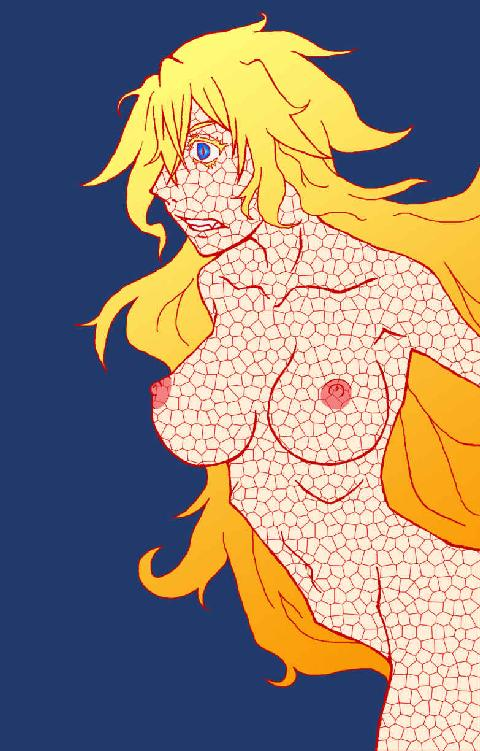

| 呪われた黄金の飢餓 | |
| 木下 森人 | |
| 猩々社 (2018) | |

登場人物
ジャクリーン・〝ジャック〟・ゴールド
ドラキュラにしてＣＤＳ捜査官
ヴィルヘルミナ・〝ミナ〟・モートン・ライコー
ＣＤＳの新人捜査官
エイブラハム・〝エイブ〟・フォックス
ＣＤＳ長官
シュテアン・〝デジェー〟・デジデラータ
フン族の末裔を自称するドラキュラ
ワイルドローズ・キッド
早撃ちと称される売春婦
ハーミーズ・〝のろま〟・ベール
グリーチネ・ファミリーの下っ端
ドン・グリーチネ
グリーチネ・ファミリーのボス
しかしそれは、資本主義以前の人間にとってあまりに不可解かつ不可思議、汚らわしく卑しい行為に見える。人生を捧げて働いたはてに期待するのが、大量かつ多額のカネとモノを背負った重みで墓へと沈むことなど、倒錯した衝動――呪われた黄金の飢餓の産物としか説明しようがない。
マックス・ヴェーバー
００１
――一八八五年、アメリカ合衆国インディアナ州。
ある日、シスターが湖で沐浴していると、何やら落雷のようなすさまじい閃光と轟音がした。彼女はおどろいてそちらのほうを見やる。
すると向こうから、とてつもなく奇妙な馬車が走って来た。
見た目は黒くて平べったく、まるで巨大な棺桶のようだ。なぜか馬が一頭もつながれていない。おそらく何かの拍子に手綱が切れ、逃げられてしまったのではないか。とすると、もしかしたら制御不能に陥っているのかもしれない。
案の定、黒い馬車はまっすぐ湖へ飛び込み、しかも運悪く深みにはまって、どんどん沈んでいってしまう。
一瞬だったが、なかに人影らしきものが見えた。あんなおかしな馬車に乗っている人間は、きっと金持ちに違いない。ならば溺れそうなところを助け出せば、たんまり謝礼をもらえるハズだ。
シスターは意気揚々と湖へ潜る。やはり馬車には、まだ青年がひとり残されていた。どうやら水圧のせいで扉が開かず、脱出できないらしい。完全に浸水するのを待てば開けられるが、青年はスッカリ冷静さを欠いている。
だが彼はシスターの姿に気づくや、あわてふためいていたのがウソのように呆けた。これは都合がいい。パニックで暴れるようなら気絶させなければならなかったが、その必要はなさそうだ。
シスターは馬車の扉を力ずくでこじ開ける。青年のカラダを抱きかかえて水面へと浮き上がり、岸まで運んだ。
青年は見惚れた様子で、「へえ、人魚なのに二本足なんだね」
「べつに人魚ではありませんから。......というか、あまりジロジロ見ないでもらえますか？」
「ご、ごめんっ」青年はあわててシスターのあられもない姿から視線をそらした。
それにしても、ずいぶんヘンテコな恰好の青年だ。南部のカウボーイみたいなファッションに、なぜかポンチョを羽織っている。ひょっとしたらアリゾナ州あたりでは流行っているのかもしれないが、北部の街へ行ったら確実に浮くだろう。だが解釈しだいでは、金持ちのバカ息子に見えないコトもない。これは期待できるのではないか。
「危ないところを助けてくれてありがとう。僕はマ――じゃなくて、クリント・イーストウッドっていうんだ。キミの名は？」
唐突に問われて、シスターはどう答えるべきか少しばかり迷ったが、「カミーリャ・オクタコージャ――いえ、とっくにエニアコージャも越えていましたっけ」
そう告げた彼女の視線の先には、こんな僻地に誰が持ち込んだのか、椿の花が咲いていた。
「カミーリャ。せっかくだから安い言葉だけじゃなくて、何かチャントお礼をしたいところなんだけど」
その言葉を聞いて、シスターは胸を高鳴らせる。
だが青年は申し訳なさそうに、「あいにく、有り金残らず車ごと沈んじゃったんだよね......」
「それを早く言ってください！ すぐ取って来てあげます！」
シスターは着ようとしていた灰色の尼僧服を脱ぎ捨て、ふたたび湖へ飛び込んだ。
そして一分も経たないうちに、有り金どころか馬車ごと湖底からサルベージしたのだった。そんな光景を目の当たりにした青年は、口をポカンと開けて絶句していた。
先ほど青年を助けたときは気づかなかったが、馬車の座席に十数個ほどの巾着袋が積み込まれていた。シスターはそのひとつを手に取って中身を覗き込む。
とたん、彼女は白くまばゆい輝きに圧倒された。
すると青年は得意げに、「ソイツは■■■■■■っていうんだ。かのナポレオン三世も愛したお宝で、なんと黄金よりも価値があるんだぞ」
今度はシスターが絶句する番だった。■■■■■■といえば、彼女も以前うわさに聞いたコトがある。しかし、実物をこの目で見るのはさすがに初めてだ。確かにこの高貴な輝きは、黄金に勝るとも劣らない。
「それ、全部キミにあげるよ」
彼女は天を仰いで叫んだ。「おお、ジーザス！ ホントにもらってよろしいのですか！」
「もちろん。キミが車を引き揚げてくれなきゃア、どうせ取り戻せなかったワケだし......。ホントはそれでひと儲けするつもりだったけど、どうやら悪だくみってのは上手くいかないらしい」
「悪だくみ？」
「いや、こっちの話。気にしないで。......それよりひとつ注意しておくけど、これはさっさと売ってドルに換えたほうがいいよ。じゃないとすぐに価値がなくなっちゃうから」
シスターはまったく腑に落ちなかった。黄金を超える財宝にもかかわらず、なぜ放っておくと無価値になってしまうのか。まるでワケがわからない。黄金がいつまでも黄金であるのと同じように、■■■■■■も■■■■■■であり続けるハズだ。
「いいかい？ 絶対だよ？ 忘れずに換金してね？」
何度も念を押すようにクギを刺されたが、彼女に■■■■■■を手放す気はサラサラなかった。まず見た目が綺麗だし、黄金よりも高価だと考えるだけで、思わずヨダレがこぼれそうになる。それをわざわざただの紙切れと交換するなど、冗談ではない。
これは大事にとっておき、いつまでも眺めて過ごすコトにしよう。財宝の山に囲まれて眠れば、きっとイイ夢が見られるに違いない。
００２
――二〇一七年、アリゾナ州フェニックス。
ジャクリーン・〝ジャック〟・ゴールドはひとり、昼下がりの大通りを歩いていた。サングラスをずらし、サファイアのような瞳でまぶしそうに太陽を見上げる。
ジャックは身長百九十センチ以上もある男装の麗人だ。波打つような金髪に透き通るような白い肌。身に着けたグレーのスリーピースが、女性として成熟したカラダつきをむしろ強調している。
これらの要素だけで人目を引くには十分だが、さらに奇怪なコトに、ジャックは大きな棺桶を背負っていた。長身の彼女が余裕で納まれるサイズの。
ジャックが目についた喫茶店に入店すると、店のマスターはあからさまに不快感を示した。「おいアンタ、そんなもん店内に持ち込まないでくれ」
「安心しろ。死体は入ってない」
「いや、そういう問題じゃない。ごらんのとおり、うちは狭いんだ。せめて外に置いといてくれ。さすがにソイツを盗むヤツはいないだろ。それから、女なら身だしなみにも注意すべきだぞ」
サングラスを外して自分の姿を見下ろし、ジャックはようやくカラダじゅう砂ぼこりだらけだと気がつき、「おっと、こいつは失礼。なにせアリゾナ砂漠をずっと歩いてきたもんでな」
ジャックは言われたとおり外に出て棺桶を下ろし、ほこりを手で払った。薄汚れていた金髪が輝きを取り戻す。「こんなもんでいいか？」
「ああ、悪いな。あと店内は禁煙だ」
「泣けるぜ......。世知辛い世の中になったもんだ」
そう嘆くやいなや、ジャックが火の点いた葉巻を素手でもみ消したので、灰皿を差し出そうとしていたマスターはギョッとした。
「すごいなアンタ。熱くないのか？」
「こう見えて手の皮が分厚いからな。ところで、いいかげん注文してもいいだろ。ホットチョコレートをくれ」
「砂漠を歩いた直後でよくもまァ」
「熱々じゃなくていい。血液みたいに生ぬるいヤツで」
「また妙ちくりんな例えを。いまいちピンとこないんだが」
「じゃあ自分のケツ穴に指突っ込んでみろ。だいたいそのくらいの温度だ」
「つまり女王陛下、マグカップにウンコをお出しすればよろしいので？ ......冗談だ。にしても、なんだってまた砂漠に？」
「乗ってた小型ジェットが墜落したんだ。上空一万メートルで機長が急死してな。アタシ以外の乗客はみんな死んだ」
「へえ、そりゃアお気の毒に」どうやらマスターは真に受けていない様子だ。ジャックの言葉に真剣みが欠けているからだろう。「にしても、よく無事だったな」
「アタシは不死身だからな」
「ナルホド、ジョン・マクレーン顔負けってワケだ。ただし髪はフサフサだが」
「そうハゲ呼ばわりするもんじゃアない。シリーズ五作のうち、三作目までマクレーンには髪が生えてたんだぜ？」
「まァ、ブルース・ウィリスの髪の毛なんかどうでもいい。それよりもアンタだ。砂漠に墜落したってのはいいとして、街へたどり着くまで車の一台も通りかからなかったのか？」
「もちろん何台も通ったさ。だが、自分の車に棺桶を載せたがるヤツはいなくてな。思わず〝王国をくれてやるから馬をよこせ！〟って叫んだぜ」
「そりゃそうだろ。そんなにあの棺桶が大事か？」
「アタシはベッドが変わると安眠できないタチでね」
「ジョークにしてはおもしろくない」
「アタシがコメディアンに見えるか？ エイハブ船長はベッドを棺桶と言ったが、逆に棺桶以上のベッドはないぞ。なにせ最後の審判まで死者がやすらかに眠るためのものだからな」
その目を見て、ジャックが本心からそう思っているのだとマスターは理解させられた。彼女を心底不気味に感じた。
ふと店内に設置されたテレビを見ると、全壊した小型ジェットが映し出されていた。場所はアリゾナ砂漠らしい。
『今朝早く、墜落事故を起こした小型ジェットですが、機体から発見された遺体には、胸部および頭部に数発の銃弾が撃ち込まれており――』
店主はギョッとしてジャックを振り向く。よくよく見れば、ジャケットの左脇が膨らんでいる気が――マスターの額に冷や汗が浮かぶ。
「どうした？ 顔色が悪いぜ？ 今日はもう店じまいにしたほうがいいんじゃないか？」
「......いや、気にしないでくれ......もともと血色がよくない。......ところでコメディアンじゃないなら、職業は何を？」
「連邦政府の仕事をしてる」
「ＦＢＩ？」
「違う。財務省だ」
「へえ、そりゃ意外だ。アンタみたいなタフな女が、デスクに座ってカネ勘定するのは似合わない」
「そうでもないさ。シークレットサービスが財務省の所管だったのを知らないのか？ 今じゃア大統領の警護で有名だが、あそこはもともと偽札取り締まりのために創設された。それからアンタッチャブルの酒類取締局も財務省だった。どっちもＦＢＩより歴史が古いんだぜ。アメリカの捜査機関は、財務省から始まったと言っても過言じゃアない」
「するってえと、アンタは捜査官だと？」
「そんなところだ。まァカネ勘定も好きだがね」
そういうコトなら安心してもよさそうだ。捜査官が銃を携帯しているのは何らおかしくない。マスターは安堵すると同時に、妙な疑いをかけてしまった罪悪感が胸に芽生える――いや、待て。あやうく納得しかけたが、だったら墜落事故の件は――
突然の銃声に、マスターは身をすくめた。ジャックが撃ったのかと思ったが、彼女の手にはホットチョコレートしかない。そもそも銃声が聞こえたのは外からだった。ここからかなり近い。
「やっぱり顔色が悪いなマスター。少し休んだほうがいい」
ふいにジャックが間近に顔を寄せてきて、マスターは息を詰まらせた。そのサファイアの瞳で見つめられると、まるでヘビににらまれたカエル、いやメデューサに石像へと変えられてしまったかのような錯覚がした。そこへジャックの吐息が吹きかけられる。
意外にも、鼻が曲がりそうなほどひどい悪臭だった。あまりにも血なまぐさい臭いで、気絶してしまいそうなほど――いや実際、意識が遠のいて――マスターはカウンターに突っ伏した。
ジャックは勘定を置いて喫茶店をあとにすると、銃声の聞こえたほうへ向かって歩き出した。
場所はすぐそこの銀行だった。入り口の扉を開けて、なかへ足を踏み入れると、ポンプアクションのショットガンを持った強盗が三人いた。一人は窓口係の女に銃口を突きつけ、ほかの二人はほかの客や従業員を壁際に集めておとなしくさせている。床で警備員が腹から血を流しながらうめいており、先ほどの銃声はおそらくコレだろう。
ジャックの存在に気がついて、強盗の一人がショットガンを向けてくる。「今日はもう店じまいだぜネエちゃん。預金ならまだ受けつけてるが」
「運のねえアマだ。ホラ、命が惜しかったら、ほかの連中といっしょに壁際へ並べ」
しかし、銃を突きつけられているというのに、ジャックはまったく動じた様子もなく、「おまえらこそ、銃を捨てて降参しろ。命が惜しかったらな」
三人の強盗は告げられた言葉の意味を理解すると、爆笑した。
「聞いたかオイ？ このアマ、ナニ寝ぼけたコト抜かしてやがる」
「この状況がわかってねえのか？ それとも、まさか俺たちの持ってるのがオモチャだとでも？」
「つーか、イカれてんじゃねえ？」
ジャックは一番近くの強盗に歩み寄り、眼前に突きつけられたショットガンの銃身をつかむと、いともカンタンに手からもぎ取って放り捨てた。「ガキには過ぎたオモチャだ」
何をされたか理解できず呆けている強盗に、ジャックはアッパーカットをくらわせる。すると彼のカラダは天井まで浮き上がり、脳天から床へと落ちて気絶した。とても女の細腕とは思えない。
「て、てめえッ！」残りの二人は激昂して、即座にショットガンを発砲した。
しかし、「チャント狙え。心臓だ心臓。そうすりゃア殺せる」
外した？ いや、この至近距離で散弾が外れるなど絶対にありえない。目隠しでも当たるハズだ。
だがジャックは無傷のまま、平然と立っている。
強盗たちは続けざまに撃った。けれどもジャックはまるで意に介さない。薄ら笑いを浮かべながら、ゆっくりと二人のほうへ歩み寄って来る。「心臓だ。心臓を狙え」
「うぎゃ！」一人が太ももから血を流して倒れた。どうやら運悪く跳弾に当たってしまったらしい。しかし不可解だ。この場に弾丸が跳ね返りそうなものなどない。
そのうち最後の一人も弾切れに。あきらめ悪くポンプアクションを何度もしごくが、出ないものは出ない。「クソ！ クソ！ クソッタレ！ チキショウ！」
目の前まで近づかれて、強盗はようやく気がつく。ジャックが身に着けている服は、あちこちズタズタに引き裂かれていた。やはり散弾は命中していたのだ。にもかかわらず、彼女には傷ひとつない。血の一滴さえ流れてはいなかった。
「ジークフリートは竜の血を浴びて、甲羅のように硬い肌を手に入れた。だったら、その血を直接受け継ぐ竜の息子なら？」
そう告げるジャックの口からは、異様に発達した犬歯が垣間見えていた。
「なッ、なにワケわからねえコトを――」
「まァようするに、そんな豆鉄砲じゃア役立たずってこった。せめてこのくらいじゃねえと」
ジャックはふところのホルスターから、異様に大きなリボルバーピストルを抜いた。グリップにガラガラヘビの象嵌が刻まれている。サイズはなんと全長五十五センチ、重さ六キロだ。それを片手で軽々と構え、強盗の脳天に突きつける。
「コイツはファイファーツェリスカって言って、大口径のライフル弾が撃てる世界最強のピストルなんだ。おまえさんのドタマも一発で吹っ飛ぶぜ。ラクにあの世まで行けるんだ。運が良ければな。試してみるか？」
強盗は顔じゅう脂汗まみれになって、歯をガタガタ鳴らし、もはや無用の長物となったショットガンを床に放り捨てた。そして両手を頭の上に挙げる。「た、助けてくれ。命だけはッ」
「賢明な判断だ」ジャックは銃口を下ろし、その代わり拳を強盗のみぞおちにたたき込んだ。強盗は悶絶して崩れ落ちる。
ジャックは強盗たちを彼ら自身のベルトで縛り上げると、地元警察が到着する前にその場から退散した。
００３
ワシントンＤＣにある財務省庁舎。第四代財務長官アルバート・ギャラティンの銅像を正面に据えた、白亜の神殿。ある意味で隣のホワイトハウスよりも荘厳で、見る者を圧倒する迫力がある。実に資本主義の権化たるアメリカらしい。
そんな庁舎の地下二階。古い証拠品の保管室しかないと大半の職員が思い込んでいるフロアの一角に、とある部局がヒッソリと存在している。
ジャックがプレートに【ＣＤＳ】と刻まれた扉を開くと、その向こう側には地上と同様のオフィスが広がっていた。そして同じように、多くの職員が立ち働いている。
彼らはジャックに気づくと、おびえて視線をそらすか、あるいは露骨に蔑視するかのふたつに分かれた。もっともジャックは意に介さず、フロアを突っ切ってまっすぐ長官室へと向かった。
「ジャック・ゴールド捜査官、ただいま戻りました」
「おかえりジャクリーン」エイブラハム・フォックス長官はデスクに座って待ち構えていた。
ジャクリーンと呼ばれてジャックは顔をしかめるが、特に言い返しはしない。
フォックス長官は中背のガッシリとした体格で、広い肩幅と厚い胸板が年齢を感じさせない。太い首の上に赤みがかった髪を生やした頭が載っており、深い青の瞳には知性と思慮深さが感じられる。
「ご苦労だった。話は聞いているぞ。いやはや、大変だったようだね。よもや飛行機が墜落するとは」
「生きた心地がしませんでしたぜ。脱出があと数秒遅れていたら、地面に激突した衝撃でペチャンコになっちまってたかも」
もっとも、流れ弾で機長を殺してしまったのも、飛行機の隔壁に穴を穿ってしまったのも、ほかならぬジャック自身なのだが。あえて口にはしなかった。
「飛行機の件は、イスラム過激派のテロリストによる犯行というコトにしておいた。まったく、ある意味都合のいい時代になったものだ」
「それで、肝心のブツは？」
「別働隊がすでに押収済みだ。......ところでジャクリーン、フェニックスで通りすがりに銀行強盗を撃退したそうだが？」
「何か問題でも？」
「さすがに目立ちすぎだ。目撃者たちはスーパーマンが現れたと大騒ぎしたぞ。彼らは事件のショックで錯乱していたと処理されたが。おのれが秘匿された存在だというコトを、もう少しわきまえてくれたまえ」
「了解。今度から目撃者は皆殺しにすればいいので？」
「......誤解がないように言っておくが、誰ひとり殺さずに済ませた手腕は評価しているとも。とはいえ、小型ジェット墜落の件もそうだが、毎度毎度キミはやりかたがおおざっぱすぎる。多少ムチャがきくカラダだからといって、ムチャクチャやっていい理由にはならないのだよ」
「ヘイヘイ、せいぜい善処しますよ......」
「いいや、今のままでは絶対ムリだ」フォックス長官は力強く断言した。「キミを踏みとどまらせるためのブレーキがいる。そこで私は考えた」
ジャックはイヤな予感がした。エイブラハム・フォックスという男がこういう含みをもたせるときは、大抵何かロクでもないコトを考えている。
そのとき、長官室の扉を誰かがノックした。
「ふむ、時間ピッタリだな。入りたまえ」
「失礼します」
入って来たのは若い女だ。ショートカットと凛々しい顔立ち、ジャックほどではないがそれなりの高身長、加えてパンツルックなので一瞬男かと思ったが、その声と骨格からしてどうやら女らしい。今さら言うまでもないが、胸は貧しかった。ひょっとしたらアマゾネスなのかもしれないが。
女はビシッと敬礼を決めて、「本日付けでこちらへ転属となりました、ミナ・モートン・ライコーです」
「歓迎しようミナ。私は長官のエイブラハム・フォックスだ。そしてこっちの金髪がジャクリーン・ゴールド捜査官、キミの相棒になる」
「チョット待て」ジャックはおのれの耳を疑った。「相棒だと？ この小娘が？ 冗談キツイぜエイブ坊や」
「私を坊やと呼ぶのはやめてくれたまえ。地位も見た目も今は私のほうが上なのだから。そうだろうジャクリーン？」
「いつまでも根に持つ野郎だ......どうも失礼いたしました。で、いったいコイツはどういう魂胆なんですかい？」
「言っただろう？ キミのブレーキだよ。彼女がいっしょなら、さすがのキミもムチャは出来まい」
「ナルホドね。さすが長官殿、ソイツは名案だ。だがいくらなんでも、足手まといをつけるのは本末転倒じゃアありませんか？」
ジャックの言葉に、ミナはムッとした表情になりつつも、すぐに笑みを浮かべて右手を差し出し、「足を引っ張らないよう、精いっぱい努めさせていただきます。どうぞよろしく」
ジャックは首をかしげて、「なんだその手は？」
「握手をごぞんじない？」
「もちろん知ってるとも。だから訊いてるんだよ」ジャックはフォックス長官のほうを振り向き、「マジメにやってくれませんかね？」
「何が気に食わないのかね？」
「決まってるでしょう。ただの人間、初潮もまだみたいな小娘、しかもズブの素人ときたもんだ。論外な要素が三拍子そろっていやがる。コレで不満に思うなと？」
「......聞き捨てなりませんね。ただの人間だから不満？ 宇宙人か未来人、もしくは超能力者ならよかったとでも？ それから、まァ年齢の件はポジティブにとらえるとして、わたしは断じて素人ではありません。そちらに座っていらっしゃる長官じきじきに、ＦＢＩから引き抜かれてきたんですよ。もちろんこちらの部署においてルーキーだとは理解していますが」
ミナの主張はむしろ逆効果だったようで、ジャックはよけいに眉間のしわを深くする。「......というか、そもそもおまえさん、ここがどういう部署か知ってるのか？」
「......いえ。実はまだＣＤＳという名称以外、何ひとつ聞かされていなくて。というかＣＤＳって何の略です？ クレジット・デフォルト・スワップ？」
ジャックは深々とため息をついて、「やれやれだぜ......銃を持ってるか？ 貸せ」
「イキナリ何です？ まァ、見たければべつにかまいませんが」ミナはホルスターからオートマチックピストルを抜き、グリップのほうを向けてジャックに手わたした。
「グロック23。ＦＢＩの官給品か」ジャックはマガジンに弾丸が篭められているのを確認する。
「ええ。イイ銃ですよ。携行性に優れた小型ながら、40Ｓ＆Ｗ弾は十分なマンストッピングパワーを備えています」
「へえ、そうかい」ふいにジャックは銃口を自分の脳天に突きつけると、ミナが止めるまもなく引き金を引いた。
「なななッ、なんで――」うろたえるミナ。だがそれは、自分の銃を使って目の前で自殺されたからではない。
自殺したハズにもかかわらず、何事もなかったかのようにジャックが平然としているからだ。しかも当たった弾頭は、ペシャンコにつぶれて床に転がっている。
「確かに悪くない銃だが、今後うちで働くなら役不足だ」そう言ってジャックは銃身部分を握ると、いともカンタンに折り曲げてみせる。そのまま備えつけのゴミ箱へと放り込んでしまった。「灰は灰に、塵は塵に」
「わ、わたしの銃が......」
「安心したまえ。新しい銃はチャント用意してあるとも」長官はデスクの下からライフルケースを取り出して開いた。「この仕事にはウィンチェスターライフルが一番だ。離れたところから標的の心臓を一発で撃ち抜ける」
「アタシはピストルのほうが好きだけどな」とジャックは得意げに言う。
ミナは当惑しつつも、与えられたライフルを手に取る。「......ウィンチェスターＭ70、４５８ウィンマグ弾......象撃ちに使うようなシロモノですよね。コレでわたしに、いったい何を撃たせようっていうんです？」
「あらためてようこそ。カウンタードラキュラサービスへ」
ミナは首をかしげる。「ドラキュラ伯爵の給仕？」
「ドラキュラ対策局。ようするに吸血鬼退治専門の部署だ」
「へえ、家畜を襲うチュパカブラでも駆除するんですか？」
「長官......」ジャックは避難の目を長官へ向ける。
「まァ彼女の場合はＦＢＩと言っても、人質救出チーム所属だったからな......。少なくとも狙撃の腕は太鼓判を押そう。訓練所では二〇〇〇メートルの狙撃を何度も成功させている」
「たとえそれが事実だとしても、実戦で腕前を発揮できるかどうかは別でしょうよ。ホントにこんな小娘で大丈夫なんですか？」
「また小娘って言いましたか？ 言いましたね」ミナは顔面の筋肉を引きつらせる。「あのですね、ゴールド捜査官――」
「ジャックでいい」
「ジャック、わたしはもう二十四歳です。小娘あつかいされるいわれはありません」
「へえ。つまり、その胸はもう育たないのか。かわいそうに」
「胸は関係ないでしょう！ 胸は！」
フォックス長官は咳払いして、「そろそろ続きを話しても？ ジャックには戻ったばかりで悪いが、ミナとともにサンフランシスコへ飛んでもらう」
「拒否権はないってワケですか......」
「観念したまえ」
ジャックは手わたされた捜査資料を開いた。ターゲットの顔写真やプロフィールなどの情報が入っている。そこに掲載されていたのは、ひとりの若い美女だった。灰色の尼僧服に身を包んでいるが、とてもシスターらしからぬ妖艶さ。つややかな浅黒い肌は吸い寄せられるようだし、何より端的に言ってみだらな顔をしている。だが何より印象的なのは、瞳だ。まるで地獄の業火が燃え盛っているかのように赤い。
「シュテアン・〝デジェー〟・デジデラータ。フン族の末裔セーケイ人を自称する、ハンガリー系ユダヤ人だ。名前の発音と順番に異様なこだわりがあるらしい。ヤツをデッソ・スターンと呼んで生きている者はいないそうだ」
「呼びかたなんざどうでもいいでしょう。べつに仲よくなりたいワケじゃない」
「確認できただけでも、吸血された犠牲者は五名にのぼる。実際にはもっと多いだろう」
「わたしにも見せてくださいよ」ミナはジャックにカラダを寄せてファイルを覗き込む。「アレ？ ジャックって何だか、甘いニオイがしますね？ ハチミツみたいな」
「あ、それ以上嗅ぐな」ジャックはとっさに彼女のカラダを押しのけた。
「そんらにひやがらにゃくても――ありぇ？ にゃんかあらまがふわふわすりゅぅ？」
「遅かったか......」
「にゃんれ？ ひかりゃはひりゃにゃい」ミナは腰を抜かして床にへたり込む。「――あっ、らめ！ ひょっろまっれぇ、れひゃう！ やら！ やらぁ！」
そして彼女は絶頂し、打ち上げられた魚のようにけいれんしながら失禁した。パンツにみるみるシミが広がり、床に黄色がかった水たまりが出来上がる。
グレース・ケリーを思わせる白い首筋、外頸動脈が強く脈打っているのが見える。ジャックはノドを鳴らして生唾を呑み込んだ。おもむろにポケットから出したチョコレートを、口のなかへ放り込んで溶かす。生暖かくてまとわりつくような舌触りとノドごしを、ジックリ味わう。
長官は内線で同性の捜査官に連絡して、ミナの介抱と着替えを頼んだ。呼ばれた者がやって来ると、ふたりを部屋の外へ追い出した。
「なんで女のアタシまで......まァいいや。それより長官、いいかげん葉巻を吸っても？」
「ダメだ。全館禁煙だと何度も言っているだろう。昔とは違うのだよ」
「オフィスが葉巻臭くなるのとションベン臭くなるの、どっちがマシだと？」
「代わりにニンニクを食べればいいではないか」
「ニンニク臭い女になるのはチョットな......」
しばらくして許しが出たので、介抱した捜査官と入れ替わりでふたりは室内へ戻った。
ミナは先ほどとは違い、短めのタイトスカートをはいていた。どうやらほかに着替えがなかったらしい。慣れていないのか、すそを必死に押さえて脚を隠そうとする。そのしぐさがむしろ扇情的なのだが。
「へえ、存外イイ脚をしてるじゃアないか」ジャックは冷やかすように口笛を吹いてから、自嘲するように笑って、「まァ災難だったな。これにこりたら、二度とアタシのそばに近寄らんコトだ。何ならクワンティコへ帰ってくれたほうがありがたい」
するとミナはなぜか右手を差し出し、「握手してください」
「......まさか、ここまで察しが悪い女だとは思わなかったぜ」
「いいえ。全部理解した上での結論です。介抱してくれた同僚の話を聞いて、あなたの立場はおおよそ把握しました。......率直に言って、わたしはハラが立ってます」
「何に？」
「あなたの正体をわかっていたら、怪力で握りつぶされるのをこわがって握手なんか求めたワケがない――なんて思っていたんでしょう？ みくびらないでください。たかが握手も出来ないで、相棒は務まりますか」
「これは一本取られたなジャクリーン」長官は愉快そうに笑った。
「うるせえ」ジャックは毒づきつつも、彼女の右手を握り返す。
するとミナは反射的にその手を振り払った。「うわ！ ナニ今の感触ゥ！ 気色悪っ！」
「おまえなァ......」
「ご、ごめんなさい！ でも、ホントにどうなってるんです？ 妙にスベスベしてて、ヒンヤリしたカンジ」
ミナはふたたびジャックの手を取って、肌を凝視した。「ナルホド。よく見ると鱗みたいなのが」
どうやら好奇心を刺激されたらしく、そでのなかに指を差し込んで触ったり、あごの間近まで目を寄せて、「すごい、こんなトコまで。もしかして全身いたるところに？」
スッカリあっけにとられて、なすがままにされていたジャックだが、「あっ！ オイ、そんな近づくとまた――」
「あへっ？」
００４
翌日、ジャックとミナはカリフォルニア州サンフランシスコへと飛んだ。
捜査資料によると、シュテアン・デジェーは市内にある高級マンションで暮らしているらしい。なんと屋上プールつきで、今くらいの季節はそこで過ごすコトが多いようだ。
「ていうか、吸血鬼が日光浴っておかしくないですか？」
「日光を浴びたくらいで死ぬ生物が実在するとでも？ もっとも、太陽の下へ出たせいで殺されたヤツは、大勢いたがね」
よく目を凝らすと、確かに太陽光を反射して鱗が多少浮き出ている。現代ならチョットした皮膚病で済まされるだろうが、昔なら魔女狩りに十分な証拠だろう。
「吸血鬼の弱点って言われているものは大抵、毒の吐息を防ぐためか、正体がバレやすくなるかのどっちかだな。十字架だの聖水だのはまァ、聖書からの言いがかりみたいなもんだが」
「ナルホド......。けどそういうわりに、ジャックはさっきからまぶしそうにしかめツラしてますよね」
「......生まれつきこういう顔だ」
狙撃ポイントは、マンションのすぐ向かいにあるビルを選んだ。敵の反撃を考えれば可能なかぎり距離を取りたいところだが、それだと弾丸の威力が減衰して鱗を貫けなくなる。アンチマテリアルライフルを使えば有効射程は伸びるものの、一発で命中させるのがむずかしくなるし、サイズと重量が大きすぎて取りまわしづらい。そういった点で、大型動物向けの狩猟用ライフルがベターだ。
――ウィンチェスターＭ70。ボルトアクション式の名作ライフルだ。ベトナム戦争において、海兵隊の狙撃チームに採用されている。弾丸は４５８ウィンチェスターマグナム弾、本来は象撃ち用のカートリッジであり、しかも徹甲弾仕様になっている。対人で使用するには過剰な威力と言えるだろう。だがドラキュラに対してなら、必要最低限の威力だ。
「さて、それじゃアお手並み拝見といこうか」
ミナは銃弾の落下度合と風の影響を計算して、照準をこまめに微調整する。この距離と風向きならさほど影響はあるまいが。
スコープを覗き込んだ先に、プールで美女が気持ちよさそうに泳いでいるのが見える。水着はブラジリアンスタイルの、かなり露出度が高いデザインだ。ミルクチョコレートを垂らしたような褐色の肌を、おしげもなくさらしている。オトコなら垂涎モノの光景だろう。
観測手を務めるジャックも熱心に双眼鏡を覗き込んで、「少しは人生を楽しむのが、自分への義務ってヤツだぜジャック」
「......ジャックって、レズビアンなんですか？」
「竜はうら若き乙女の血肉を好むもんだ。とはいえ、吸血衝動を素直に受け入れられるヤツはそういない。まァ一種の防衛機制だな」
「言ってる意味がよくわからないんですが......」
「しょせんドラキュラも同じ人間ってコトさ。せいぜい噛みつき魔が関の山、赤い竜にはなれん」
引き金にかけようとした指が止まる。「......ホントに撃っていいんですか？」
「今さら何言ってやがる」
「でも、丸腰のところを問答無用で射殺するなんて。ドラキュラも人間だっていうなら、人間としての権利も認めるべきでは？」
引き金の重さは二ポンドに設定してあり、おどろくほど軽い力で引ける。それが命の重さだとでもいうように。軽い、あまりにも軽い。
ジャックは肩をすくめる。「なら、死んだ女たちの権利はどうなる？ 血を吸われ、殺された彼女たちを代弁するのは？」
「それとこれとは話がべつでしょう。どんな犯罪者にも、裁判を受ける権利はあるハズです」
「そんなに生け捕りがしたけりゃア試せばいい。ただし、ひとつだけ言っておくぞ。アタシの相棒は過去三名殉職した。理由を知りたいか？」
しかしミナは質問を返さず、「......ＦＢＩ人質救出チームは、むやみな流血を良しとしません。人質の安全が最優先なのは言うまでもなく、犯人に対する発砲も必要最低限で留めます」
「それが？」
「不用意な発砲は、流れ弾が人質に当たりかねない。ゆえに発砲するときは一発で確実に殺す――必要だというのなら、たとえ未成年だろうと射殺してみせますよ。わたしの手はとっくに血まみれですから」
その冷たいまなざしに、ジャックは一瞬、おのれが心臓を撃ち抜かれたかのような心地がした。むろん銃口はシュテアン・デジェーへと向けられている。ミナの視線は、ただ獲物だけを見据える。そんなミナの姿に、ジャックは観測手の役目も忘れて魅入られた。
ミナが呼吸を止める。さながら石像じみた、惚れ惚れするほどの静止状態。思わず、やわらかな頬に触れてみたくなるほど。しかし狙撃のジャマをしてはいけない。
そして次の瞬間、人差し指だけが動いて引き金を引いた。
直後、ミナの両目がおどろきに見開かれる。「気づかれたッ」
「なに？」ジャックはあわてて双眼鏡で標的のほうを確認する。するとシュテアンはいまだ健在だった。一応かすりはしたようだが、プールがわずかに赤く染まっただけだ。
ミナはボルトアクションで次弾を装填し、即座に追い打ちをかけようとするが、敵はプールの底へ潜って死角に逃れてしまった。
「外しちまったのか？」
「......というより、かわされたっぽいです」ミナは目の前の現実が信じがたい様子で、「わたしの見間違えかもしれませんけど......あの女、明らかに銃声を聞いてから反応してましたよ。ジャックの目にはどう映りました？」
まさかよそ見していたとは、口が裂けても言えない。「うん、まァ、アタシにもそう見えた、かなァ？ 一瞬だったし、ハッキリとは断言できねえ、けど」
「ドラキュラっていうのは、てっきり反射神経と動体視力も優れてるのかと思いましたけど」
「いいや、それはねえ。ドラキュラはヒトの身で竜の膂力を振るう。ようするに筋肉がすべてだ。言い換えれば、それ以外の身体能力はただの人間と大差ねえ。むしろ反応は遅いくらい――ともかく、銃声を聞いてから弾を避けるなんて芸当は不可能だ」
「だったら偶然ってコトですか......絶対当たると思ったのに......」
「まァ気にするなルーキー。『ジャッカルの日』を読んだコトは？」
「ジンネマンの映画版なら」
「どれだけ正確に照準を合わせたって、結局当たるかどうかは運しだいだ。おまえはよくやったよ。あとはアタシにまかせろ」そう言うや、ジャックは上着をはだけて、背中全体を露出させた。
ミナはあわてふためいて、自分の目を手で隠す。「なんでイキナリ脱いでるんですかッ？」
「お気に入りの服をダメにしたくないからな」すると、背中の皮膚を突き破り、コウモリに似た赤い翼が生えてきた。
ミナの口から思わずつぶやきがもれる。「悪魔――」
「バッチリ見てんじゃねえか」
「ご、ごめんなさいっ」
「いいさ。べつに女同士だし、減るもんじゃねえ」
ジャックは両翼をはばたかせてフワリと舞い上がり、隣のマンションへ飛び移った。
リボルバーを抜いて、油断なくプールに銃口を向けた。いつ飛び出してきても撃てるよう備える。「かくれんぼの時間は終わりだ。逃げ道はないぜ」
だが、ジャックはすぐ異常に気がついた。プールの水かさがどんどん減少している。一方シュテアンの姿はどこにもない。見れば底にある排水口のフタが外されていた。
屋上から下の階へ降りると、廊下が水浸しになっていた。プールからの水漏れか。シュテアンはおそらく排水口から入り込み、爪と怪力で管を破って脱出したのだ。
追いかけようとしたところで、火災報知器がけたたましく鳴り出した。それを聞きつけたマンションの住人たちが、あわただしく飛び出てくる。間違いなくシュテアンのしわざだろう。この混乱に乗じて逃げるつもりか。
深追いは禁物だ。ジャックひとりならまだしも、今はミナがいっしょというコトもある。「まったく、エイブのヤツめ......」
とはいえ、潔く逃げてくれたならそれはそれで、もうひとつの仕事を果たすには都合がいい。
ジャックは狙撃ポイントに戻り、今度はミナを運んで――高いところはニガテだとごねたが強制的に――隣のマンションへ。シュテアンが暮らしていた部屋へと向かう。
当然、玄関にはカギがかかっていた。ジャックはポケットからコンドームを取り出すと、吐息を吹き込んでふくらませ、口を閉じて結び目にマッチを挿す。それをドアノブに引っかけ、マッチに火を点けた。
「いったい何が始まるんです？」
「伏せろマヌケ」
マッチが燃え尽きていき、火で熱せられたゴムが融けたとたん、瞬間的にすさまじい爆炎が巻き起こった。それが収まると、鍵穴の周辺は跡形もなく融解していた。
「そんな息してて、よく葉巻なんか吸ってられますね......」
「むしろちょうどいいスリルだ。うっかりボーッとしてなんかいられんからな」
ふたりは室内へと侵入する。一見して何の変哲もない住まいだった。ごくフツーの人間らしい生活感があり、とてもおそるべき吸血鬼の棲み家とは思えない。
しかし、その感想は寝室の扉を開けるまでだった。
寝室にもかかわらず、ベッドが置かれていない。その代わり、紙幣の山がうず高くそびえていた。ミナの口から、思わず感嘆の声がこぼれる。
「財務省カウンタードラキュラサービスに与えられた役目で大事なのは、ドラキュラ退治そのものよりむしろ、このカネを押収するコトなのさ」
「どういうコトです？」
「伝説にいわく、竜は金銀財宝を好む。それは竜の息子も同じだ」
ジークフリートが退治した竜は、実はもともと竜ではなかった。しかし手に入れた財宝へ執着するあまり、竜となってしまったのだ。また、ジークフリートが暗殺された一因は、彼からニーベルンゲンの財宝を奪うためでもあった。そしてジークフリートを殺害したトロニエのハゲネも、アッティラの軍勢と争って敗れ、財宝のありかを明かさなかったため殺された。
「ただし現代のドラキュラは、黄金だの宝石だのにこだわる古臭い価値観は持ち合わせてねえ。ドルで十分満足なのさ。そして、手に入れたカネをひたすら守り続ける。使いもせず、地上に富を積み上げ続ける。すると、どうなるか？」
「......市場に流通する通貨量が減少したら、いずれはデフレを引き起こして、経済が停滞するでしょうね」
「そうだ。ましてやドラキュラの場合、タンス預金に精を出す老人どもと違って、いつまで経ってもくたばっちゃアくれない。誰かが引導をわたして、退蔵貨幣を放出させる必要がある」
吸血衝動を抑えるコトはさほどむずかしくない。なぜなら竜と人間の嗜好は相反しているからだ。
しかし、この呪われた金銭欲には誰もあらがえない。人間はそもそも欲深なのだから。
黄金狂は黄金郷を求めてさまよい続ける。
「それにしても、すごい量――。少なくとも一億ドルはありそうじゃアないですか」
目を輝かせて、ミナはドル紙幣の山を眺めている。口から今にもヨダレがこぼれ落ちそうだ。
「言っておくが、べつにアタシたちのふところへ入るワケじゃないからな？」
「......エッ？」
「アタリマエだろ。押収されたカネは財務省資産没収執行局が管理する財務没収基金の口座に入金されて、一部はＣＤＳの活動予算に計上されるが、アタシたちがもらえるのはあくまで、雇用契約どおりの安月給だけだ」
「エェーッ！ そんなご無体な！」ミナは悲痛に叫んだ。「これだけの大金を目の前にして、一セントも手に入らないとか！ ジャックはドラキュラなのによくガマンできますね！」
「すねるなよ。初仕事を終えた祝いに一杯おごってやる。この近くにいいジャズの聴けるイイ店があるんだ」
「ホントですか？ やった！ タダ酒！」
「おまえさんはドラキュラよりよっぽど現金だよ」ジャックは苦笑いして言った。
００５
「おのれ――おのれェ！ 下賤の分際でよくも！ わらわは偉大なるアッティラ大王の後継者なるぞ！ わらわの大事なカネを！ あれだけ集めるのに、どれだけの時間がかかったと思っておる！」
着の身着のまま、ほうほうのていで逃げ出したシュテアン・デジェーは、悪臭ただようサンフランシスコの下水道を、ドブネズミのごとく駆けていた。
いつまでも水着でいるワケにはいかない。路地裏で出合い頭に彼女を襲おうとしたチンピラの、死体から剥ぎ取った服だ。サイズはまるで合わないし、食欲の失せる体臭が染み込んでいて吐き気もするが、背に腹は代えられない。
血塗られた指先には、数枚のドル札が握られている。これもチンピラから奪った。はした金に過ぎないが、それでも無一文よりはいい。
「一ドル、二ドル、三ドル」
カネを数えていると、心が落ち着く。時間は容赦なく過ぎ去り、はかなく消える。けれども稼いだカネが、おのれが一分一秒を確かに生きてきたと証明してくれるのだ。でなければ不老不死など、何の意味もない。
そう、あのカネは彼女にとって、これまで過ごしてきた時間そのものだった。
「絶対に許さぬ！ いつか殺す！ かならず殺す！ だがけっして楽には死なせぬぞ！ 串刺しじゃ！ 串刺しにしてやる！ そしてわらわから奪ったカネを、残らず取り返してやるからな！」
今回ばかりはおくれを取ったが、二度めはない。あの一瞬で、ふたりの顔はハッキリ憶えた。次に会ったときがヤツらの運のツキだ。泣いて許しを乞わせてやるのだ。
怒りに満ちたその形相は、日本の伝統的な仮面で真蛇と呼ばれるものによく似ている。何でも能という仮面劇で『道成寺』なる演目に用いられるものらしい。
「グララアガア！ グララアガア！ グワア！ グワア！」
シュテアンは興奮したあまり、言葉にならない叫び声を上げた。それはさながら、竜の咆哮のようだった。
００６
ＣＤＳ本部に連絡して、差し押さえたカネの運び出しを手配するなど事後処理を終えたあと、ふたりはジャックの勧めるジャズバーへとやって来た。並んでカウンターに座る。
「スリボビッツをストレートで」
「ありませんよそんなもん」
「ならトカイワインは？」
「そんなにハンガリーの酒が飲みたかったら、オハイオ州のバーへ行ったらどうでしょう？ あっちはハンガリー系が多いらしいですから」
「知ってますよ。わたしクリーブランド出身ですから。気を悪くしないでくださいね。チョット試してみたかっただけです。じゃあコロナをひとつ」
「アタシはホットチョコレート」
ミナは珍獣を見るような目でジャックを凝視した。「禁酒法ならとっくの昔に廃止されましたよ」
「ひとをババアあつかいするな。べつにいいだろ」
「だけど、おごりなのにひとりで飲めっていうんですか」
「気にするな。アタシは酒よりこっちが好きなんだよ。この店はアルコール以外の品ぞろえも充実してるし。なァ、マスター？」
するとマスターは気まずそうに、「......ところでお客さん、うちは禁煙でして」
ジャックはうめいた。「なんだって？ 半年前に来たときはかまわなかったハズだが」
「あいにく一ヶ月前からそうなったんでさァ。これも時代の流れってヤツですねェ」
「泣けるぜ......」差し出された灰皿で、ジャックは吸いかけの葉巻をもみ消した。「そういうワケだから、ミナ」
「ハイハイ。言われなくてもわかってますって。わたしもこんなところでおもらしはゴメンですから」
「ホントにダイジョーブか？」
「しつこいですよ。わたしだってマヌケじゃないんです。三度も同じ轍は踏みません」
「だといいんだがな......」
ミナは話題をそらすように、「そんなコトよりジャック、わたしはジャズの聴けるイイ店へ連れて来てもらったハズですよね？」
「ああ、そうだ」
「ジャズは？」
「......実はアタシもオカシイと思ってた」
店内はお世辞にも繁盛しているとはいいがたいが、それでもわずかな酔客たちの笑い声で満ちている。
しかし今宵この場に、音楽はない。
ジャズを奏でないジャズバーなど、ストリッパーのいないストリップ劇場も同然だ。あるいは客が少ないのも、それが原因かもしれない。ジャックが半年前に来たときは、もう少しマシだったが――。
「おいマスター、いったいどうなってる？ あのケイジャンのピアニストは？」
マスターは無言で、店の奥にあるピアノ――の脇の壁に貼られた紙を指さした。
ミナは席を立ち、そばまで近寄って読み上げる。「えーっとなになに......『ピアニストを撃たないでください』って、何ですかコレ？」
「かつて西部は無法地帯だった」ジャックはまるでつい昨日の出来事でも語るような口ぶりで、「酒場に集まるガンマンどもは気が短くて、ほんのささいなキッカケで銃を抜く。賞金首と賞金稼ぎが鉢合わせればなおさらだ。バーテンや給仕が殺されるのはまだいい。酒が注げさえすれば務まる。だが、ピアニストの代わりはいない」
「ナルホド。だからピアニストを撃つなって......でも、それはあくまで昔の話ですよね？」
「まァな。今の時代にそんな心配は無用だが、シャレとしちゃア悪くない」ふとジャックは首をかしげ、「とはいえ、半年前にあんな貼り紙はなかったんだが......」
「貼り出したのは三日前からですよ」とマスターは忌々しげに舌打ちして、「実はピアニストが撃たれたもんで」
ミナが貼り紙をめくると、壁に弾痕が穿たれていた。
ジャックは目を丸くし、「そいつは穏やかじゃねえな......何があった？」
「あのヤローには女優志望のツレがいたんですがね......『アイツは目がデカいから、あと少し生まれるのが早ければ、ゴラム役でオスカー獲れたのに』なんて陰口たたいてたのがバレちまって......」
「自業自得じゃねえか」
「でも、撃たれるほどじゃアないでしょう。幸いくたっばっちゃいませんが、復帰はしばらくムリですな」
「......ナルホド。事情はよくわかった」ジャックはミナを指して、「だがアタシはコイツに、ジャズが聴ける店へ連れて行くと約束しちまったもんでさ。そこで、だ。ちょいとばかし、アタシにピアノを使わせちゃアもらえないか？」
「へえ、お客さんが弾かれるので？ どうせ誰も使ってませんし、そいつはべつにかまいませんが」
「ありがたい。――ミナ、何かリクエストはあるか？」
ミナは少し悩んで、「わたしのためにミスティを弾いて」
「エロール・ガーナー？」ジャックは顔をしかめる。「悪いがあの曲にはイヤな思い出しかない。アタシにとっては恐怖のメロディだ」
「じゃあストレート・ノー・チェイサー」
「セロニアス・モンクか。それなら問題ない」
ジャックはグラスに残っていたチョコレートを飲み干す。演奏にジャマなジャケットを脱ごうとしたが、ふところのピストルが丸見えになるのでやめた。発砲事件があったばかりなのだし、心臓に悪いだろう。
ピアノのイスに座ると、ジャックは店内にいるすべての客を見わたし、「紳士淑女の皆々様、ヘタの横好きでたいへん恐縮ですが、どうぞ一曲お付き合いください」
はたしてジャックの演奏は、意外や意外、予想をはるかに上回る超絶技巧だった。ほかの客たちも喝采してチップを投げ込み、アンコールを求めてやまなかったので、続けて『ラウンド・ミッドナイト』も弾いた。
とはいえさすがに二曲で終わりにし、ジャックはミナのもとへ戻って来た。
「ノドが渇いたな。マスター、ホットチョコレートおかわり」
「しつこいようですけど、ホントにアルコール飲まないつもりですか？」ミナはつまらなそうな顔で、「せめて一杯くらい付き合ってくれても」
「あいにく味覚がフツーの人間とは違うんだ。酒の味はイマイチよくわからん。どうせ飲むなら美味いほうがいい」
そうは言うが、ひとりだけ酔ってシラフに相手されるのもおもしろくない。
ふと、ミナはチョットした悪だくみをひらめいた。多少酔っていたせいもあるだろう。
「だったら、こんなのはどうです？ マスター、彼女にアレクサンダーを」
「オイ、だから酒は飲まんぞ」
「まァまァ、ホットチョコレートと似たようなもんですから。ここはだまされたと思って。ね？」
運ばれてきたカクテルを、ジャックは用心深くなめるようにひとくち飲んで、それからイッキに飲み干した。「へえ、ナルホド。悪くない」
「でしょう？ もう一杯いかが？」
「いただこう」二杯目もジャックはすぐ空にしてしまった。「で、どうだった？ アタシの演奏は」
「ええ。すごくよかったですよ。正直びっくりしました。まさかジャックにあんな特技があったとは。いったいどこで習ったんです？」
「フランツ・リストから教わった」
「またまたァ、ご冗談を」
「アタシは不老不死の吸血鬼様だぞ？ 実年齢いくつだと思ってやがる。イエス・キリストにだって会ったコトあるぜ」ジャックは自慢げにうそぶく。
「マジですか？ あのキリストに？」
「キリストが何だって？」
「だから、ホントに会ったコトあるんですか？ キリストに」
「ハァ？ バカじゃねえのおまえ？ 二千年前だぞ。アタシがそんなババアに見えるってのか」
「いや、ジャックがそう言ったんじゃないですか」
「アタシが何を言ったって？」
「だから、キリストに会ったって」
「なに、おまえキリストに会ったコトあるの？」
「......あの......もしかして、もう酔ってます......？」
「オイオイ、誰が酔ってるって？ アホぬかせ。このアタシが酔ってるように見えるってのか？ アタシは酔ってねえ。なぜなら酔ってねえからだ」
「いや、ゼッタイ酔ってますよね！」
「だから酔ってねえって。まったく、何度言わせやがる。ホラ、酒臭くないだろ？」
そう言って、ジャックは顔を近づけて吐息をムリヤリ嗅がせようとしてくる。ミナは一瞬、まつげの長さに見惚れかけたが、反射的に飛びのいて自分の鼻と口を押さえた。ウッカリ吸い込んでしまったら、公衆の面前で恥ずかしい姿をさらすハメになってしまう。
それにしてもこの振る舞い、やはりジャックは酔っているようだ。確かにアレクサンダーはなめらかな口当たりに対し、アルコール度数の高いカクテルだが、いくらなんでもたった二杯で。さすがに想定外だ。
ジャックがしつこく酒臭くないか嗅がせようとしてくるので、ミナはとっさにトイレへ逃れた。正直このまま帰りたいが、アレを放っておいたらほかの客に被害が出かねない。それに、ドラキュラの吐息は可燃性なのだ。あの調子でやたらと息を吐いていたら、最悪の場合バーが火事になる。いや、むしろ爆発しかねない。手遅れになる前に何とかしなければ。
こうなったらいっそのコト、もっとジャックに酒を呑ませてしまおう。それで酔い潰させてしまうのだ。あの様子ならそう時間はかからないだろう。ミナは意を決してホールへと戻った。
「このクソアマ。よくもナメたマネを」
「女だと思って下手に出りゃア、イイ気になりやがって」
「ちょいとおしおきが必要みたいだな」
ミナが席を外していたわずかのあいだに何があったのか、ジャックがチンピラたちに取り囲まれていた。その屈強な体格からして、おそらく非番の軍人だろう。そろいもそろって筋肉モリモリマッチョマンの変態――例えるならアーノルド・シュワルツェネッガー、ドルフ・ラングレン、シルヴェスター・スタローンがチームを組んだカンジだ。しかもみな異様に殺気立っている。とても割って入れる雰囲気ではない。
「マスター、いったい何が――」
マスターはヒヤヒヤした様子で、「実はお連れのかたが、あちらのお客さんが注文したチキンブリトーを横取りしちまいまして......」
「ブリトー......」
「素直に謝ってたらまだよかったんですが......」
こんな状況にかかわらず、ジャックはまったく取り乱した様子もなく、むしろ腹立たしいほど平然としている。「泣けるぜ......。大の男が大勢で女ひとりを寄ってたかって、恥ずかしいとは思わんのか？ だいたい、アタシが何をしたっていうんだ？」
「だから何度も言ってるだろ！ オレらのチキンブリトー盗み食いしただろうが！」
「盗む？ オイオイ、ひと聞きの悪いコト言うなよ。アタシがいつブリトーを盗んだって？ どこにそんな証拠がある？」
「テメエの腹のなかだよ！ つーか、みんな見てる前で堂々と盗んどいて、よくそんなへらず口がたたけるもんだ」
「まァそうカッカするな。たかがブリトーくらいでギャアギャア騒いで、みっともないぜ。ほかの客にもメイワクだろ」
「そういうそっちこそ、一言謝れば済む話だろうが。いいからさっさと謝れ」
ジャックは肩をすくめて、「やれやれだぜ......しかたねえ。マスター、アレクサンダーをもう一杯」
マスターはおっかなびっくり、「いいかげん呑みすぎですって。そろそろヤメにしておいたほうが――」
「いいから作れ。そのあいだにコイツらカタづけておく」
それを聞いた男たちは腹を抱えて爆笑した。「オイオイ、マジかよ。このアマ、今なんて言った？」
「そんな細腕で、おれら三人を？ 冗談キツいぜ」
「いやいや、おまえら早とちりするな。カタづけるってのはようするに、アレだよアレ」
「アレってまさかアレか？ そういやさっきから気になってたが、この女なんか息くせえんだよ。生臭い感じのニオイがするような」
「ああ、そりゃア間違いなくナニのしゃぶりすぎ――」ジャックに不意打ちで金的をくらわせられ、男は泡を吹いて倒れた。
「おお、なんてコトしやがるクソアマ！」
「いいかげんにしとけよ。力の差ってもんをわからせてやる」
ほかのふたりも激昂してジャックへ襲いかかった。チョットぶん殴ってやればおとなしくなるだろうという魂胆が透けて見える。
ジャックはいっさいよけるそぶりもなく、無抵抗に殴られた。
その数秒後には、男たちは砕けた拳を抱えて悶絶していた。硬い鱗を殴れば当然そうなる。
「クソッタレ！ 何か着込んでやがったか！」
なまじ鍛えていたばかりに、よけいダメージは深そうだった。それでも彼らは屈さず、今度は投げ飛ばそうとつかみかかるが、逆に投げられて床と熱烈なキスをした。
そこでちょうど注文したカクテルをマスターが運んできたので、ジャックはグラスを受け取ると、ひと息で空にした。
「口ほどにもないヤツらめ」鼻で笑ってそう吐き捨てるやいなや、ジャックは突然仰向けに倒れてしまった。そのまま高いびきをかきはじめる。どうやら酔いつぶれてしまったようだ。
「まったく、ひと騒がせな......」ミナの口から思わずため息がこぼれた。
このまま放置しておくワケにはいかない。まったく起きる気配がないし――むしろ酔いがスッカリ醒めるまで眠っていてほしい――ここはミナが運び出すしかあるまい。事情を知らない人間に手伝わせて、ウッカリ毒の吐息を吸われても困る。幸い、滞在しているホテルはここから目と鼻の先にある。
鍛えているので女ひとり運ぶくらいは朝飯前なのだが、問題はどういうふうにジャックのカラダを運ぶかだ。普通に背負ったり抱えたりするのでは、顔と顔が近づきすぎて吐息を吸いかねない。ミナもさすがに学習した。デキる女は三度も同じ轍を踏まないのだ。
いろいろ検討してみた結果、両脇にそれぞれジャックの両脚を抱えて引きずるコトにした。生身の人間なら後頭部がひどいコトになるが、その点ドラキュラは平気だ。服はボロボロになってしまうだろうが、そこはしかたあるまい。
道行く人々の視線に羞恥を感じたり、警官に職務質問されたり、危うく犬のフンを引きずりそうになったりしながら、ミナはどうにかホテルの部屋までたどりついた。
死体のように眠るジャックを、棺桶のなかに押し込む。彼女はひとの苦労も知らず、おだやかな寝顔を浮かべてスヤスヤ眠っている。そのやすらかな姿に、ミナは思わず笑みをほころばせた。「こうして見ると、けっこうかわいい顔してるのね......」
そのとき、ジャックが何か寝言をつぶやいた。何と口にしているのか気になって、ミナは彼の口もとに耳を近づける。
すると、「アーサー......」
「もしかして恋人の名前？ 何ならもっと恥ずかしいネタもらさないかな」などと期待したのもつかの間、ミナは突如激しい快感の波に襲われて腰が抜け、ジャックの豊満な胸へと突っ伏した。
またもや吐息を吸ってしまったのだ。最大限警戒していたのに、最後の最後で油断した。
全身がけいれんと弛緩をくり返して、言うコトを聞いてくれない。下半身にジワリと生暖かい感触が広がる。口が上手く閉じられず、舌がだらしなく垂れ下がってヨダレがこぼれる。
加えてやっかいなコトに、よりによってこんな位置で動けなくなってしまった。ジャックは朝まで目覚めそうもない。このままでは毒を延々吸い続けてしまう。
ハチミツのような甘い香りに、みるみる包まれていく。脳髄がとろけさせられる。カラダが泥の底へと沈み込んでいくような、あるいは浮遊するような感覚――それこそ天にも昇りそうな――何も考えられなくなる――。
００７
イリノイ州シカゴにあるナイトクラブ。今宵も若者たちが刹那的な快楽を求め、ゴリラズのアップテンポなリズムに乗って踊り狂っている。なぜこの曲のタイトルが『クリント・イーストウッド』なのかはイマイチよくわからない。ワイルドローズは首をかしげながら、ひとりバーカウンターでコロナをラッパ飲みする。
ワイルドローズ・キッドは売春婦だ。露出度の高い性的なカウガールコスチュームと、どんな暴れ馬も乗りこなす騎乗位に定評がある。その超絶テクニックは早撃ちとも称されており、彼女に股間をにぎられて五分ともつ男はいない。
彼女はこのクラブの持ち主であるマフィアに許可をもらい、客引きをしている。その気になれば一晩で十人でも二十人でも相手できるが、安売りはしていないので、最低でも毎夜ひとり客を取れば、マフィアへの上納金を差し引いても十分生活していける稼ぎにはなる。
とはいえ、いつまでこんな暮らしができるものだろうか。
彼女はまだまだ若い。しかし、いずれは老いる。そのときはけっして遠くない。彼女は母親似であり、すでに未来の姿を否応なく見せつけられていた。絶対あんなふうにはなりたくないと思う一方、けっして逃れられないコトも理解している。
最近、鏡を見るのが怖い。シワが増えているコトに気づいてしまうのではないかと。写真を撮られるのもイヤになった。いつか見返したとき、若いころの自分にあざ笑われるような気がして。
今夜の客を探さなければならないのに、つい益体もない考えごとにふけってしまう。酒の量も自然と増える。こんなコトをしている場合ではない。さっさとカモを見つけなければ。アバズレらしく男に媚びを売って、股を開くのだ。いつものように。そうするしか生活のすべがないのだから。
ワイルドローズはコロナの瓶を空にすると、店内を物色しはじめた。常連客がいると話が早いのだが、あいにく今夜は見当たらない。どこかにカネ払いのイイ男はいないだろうか。商売女で手っ取り早く性欲を解消したい、クソッタレな男は。
と、彼女の目に、ふだんのこの店とは違う光景が飛び込んできた。明らかに場違いな存在がいた。
それは灰色の尼僧服を着たシスターだった。たぶんワイルドローズよりも若い。シスターのくせに葉巻をくわえていて、しかもそれが不思議と様になっていた。
ワイルドローズは一目見て、彼女が偽シスターだと確信した。それはこんな場違いなナイトクラブにいるからでも、葉巻を吸っているからでもない。なんというか、全身にまとった雰囲気がみだらなのだ。ワイルドローズよりもはるかに売春婦らしい、露出の少ない尼僧服でも隠し切れない妖艶さ。ミルクチョコレートのようにつややかな浅黒い肌など、思わず舌でなめて溶かしたくなる。同性愛に興味がないワイルドローズでさえ、自然とそんな感想をいだくのだ。もしこんな女がまかり間違って修道院へ入ろうものなら、そこは一晩で背徳の館と化すだろう。
あるいは本当に、シスターの格好をした売春婦なのかもしれない。世のなかにシスターとセックスしてみたい男はごまんといるだろう。メイドやナースとイイ勝負だ。
けれども、もしそうだとすればおかしい。ワイルドローズはあんな女を知らない。この店で商売をするには、オーナーであるグリーチネ・ファミリーの許しがいる。そして新たに許可を受けた者がいれば、かならず事前に紹介があるハズだ。しかしワイルドローズは何の話も聞いていない。
単にプライベートで訪れただけならばよいのだが、勝手に商売しようとしているなら放置しておくワケにはいかない。ルール違反だし、不当にこちらの稼ぎを横取りされるコトにもなる。
とりあえず探りを入れてみよう――そう思い、ワイルドローズがシスターへ近づこうとしたところで、目が合った。
そして、なんとシスターのほうから近寄って来た。
「そなたさっきから、わらわのコトを見ていたじゃろう？ トボけてもムダじゃぞ」
「べつにトボけるつもりは」
「まァ見入ってしまうのもムリはあるまい。なにせわらわは美しいからなァ！ かのクレオパトラとて、わらわの前では霞むというものよ」
やたらと尊大な口調に、ワイルドローズはスッカリ気圧されてしまった。まるで悪徳貴族のような言葉づかいだ。先ほどまでの第一印象はスッカリ塗りつぶされていた。こんなムダに気位の高そうな女が、軽々しくその辺の男に股を開くとは思えない。
シスターは品定めするように、ワイルドローズのカラダを上から下まで眺めて、「ふむ。わらわほとではないにせよ、そなたもなかなか悪くないぞ。実にわらわ好みじゃ」
「ハァ......」
「しかし、アレじゃな。そなたの美貌には、どことなくかげりのようなものが見える。何か悩みごとでもあるのではないか？ わらわでよければ相談に乗ってやってもよいぞ？ 仮にもシスターの格好なぞしておるし」
「つまり、懺悔を聞こうってコト？」
「そう、それじゃ。教会にしては騒がしすぎるが、まァひとに盗み聞きされる心配もあるまい」
そう言って、まだワイルドローズは同意していないのに、シスターは隣のイスへ座った。
「自己紹介がまだであったな。わが名はシュテアン・デジェー、偉大なるフン族、アッティラ大王の末裔たるセーケイ人じゃ」
アッティラ・ザ・フンと言えば、ワイルドローズもハイスクール時代に習った覚えがある。具体的な内容は忘れたが。
「......アレ？ でもシュテアンって、思いっきりユダヤ系の名前よね？」
「こ、こまかいコトは気にするでない！ ヘブライ人の血もほんのちょっぴり流れておるというだけのコトじゃ！ それで、そなたの名は？」
「ワイルドローズ・キッドよ」
「いばらか。わらわにとっては微妙に不吉な名じゃのう......。だがまァ、ナナカマドよりはマシか」
「何の話？」
「こっちの話じゃ。気にせんでいい。さてワイルドローズよ、悩みを聞くと言ったが、それが何なのかズバリ当ててしんぜよう。そなた、老いを怖れておるのじゃろう？」
ワイルドローズは息を呑んだ。「どうしてわかったのッ？」
「なに、そなたと同じような娘たちを、これまで何人も見て来たのでな」
まるで年寄りのような口ぶりだ。てっきり自分より若いと思い込んでいたが、ひょっとすると年上なのかもしれない。というより、妙に老成して見える。
シュテアンは幼い子供に言い聞かせるような口調で、「よいか？ 時間とは、この火が点いた一本の葉巻と同じじゃ。ただくわえておるだけでは、煙を味わえないまま燃え尽きてしまう。あとに残されるのは灰だけ。ゆえに老いるのが怖いというのならば、なおさら若いときを無為に過ごすでないぞ。紫煙を余さず吸い込み、味わい尽くせ。そうして初めて、吸い殻は満喫した証となる」
「......まァ、言いたいコトは何となくわかるわ。ようするに今を全力で生きれば、顔に刻まれたシワの一本一本が勲章に思えるってワケ？」
「そんなところじゃ。含蓄あるじゃろう」
「いいえ。正直、期待外れもいいトコだわ。そんなありきたりなアドバイスは求めてない。どんなに価値ある人生を過ごそうが、最後に醜く老いさらばえるんじゃア台無しよ」
シュテアンは半分ほど燃え尽きた吸い殻を灰皿でもみ消して、新たな葉巻に火を点けた。結局はそういうコトだ。吸い殻はしょせん吸い殻に過ぎない。葉巻に価値があるのは、吸っていられるあいだだけなのだ。
「ふむ。ほとんどの娘は、この例え話を聞けば目から鱗が落ちるのじゃが、そなたはなかなかに強情じゃな」
持論が否定されたにもかかわらず、むしろシュテアンはよろこばしげに笑った。
「ますます気に入ったぞ。やはりわらわの目に狂いはなかった。そなたこそわらわの寵愛を得るにふさわしい」
シュテアンはそう告げるや、葉巻の煙をワイルドローズの顔へ吐きかけてきた。彼女は反射的に目を閉じて咳き込む。何やら葉巻の臭いに交じって、ほのかにハチミツのような甘い香りが――。
ふいにめまいがワイルドローズを襲う。酩酊に似た感覚。しかし酒はほとんど飲んでいないのだが。イスにしがみついていないと、カラダがフワリと浮き上がってしまいそうだ。
「今宵はわらわがそなたを買おう。女が娼婦を抱いてはいけないという決まりはあるまい」
シュテアンが百ドル札を数枚にぎらせてくる。ワイルドローズは酔っ払いのように頭がまわらないまま、カネを受け取った。
「では、行くとしようか。場所はそなたの家がいいのう。わらわを迎え入れておくれ。わらわのかわいい血袋よ」
００８
グリーチネ・ファミリーはシカゴを支配するイタリアンマフィアだ。市警とも裏でつながっており、この街に逆らえる者はひとりもいない。
ハーミーズ・〝のろま〟・ベールはグリーチネ・ファミリーの下っ端構成員だ。ファミリーが経営するナイトクラブの用心棒をまかされている。店でのもめごとを仲裁したり、タチの悪い客を追い払ったりするのが仕事だ。また、この店で客引きをする売春婦の世話もおおせつかっている。
ここ数日、彼はあるひとりの売春婦が気にかかっていた。その女の名はワイルドローズ・キッドだ。
今夜も仕事にやってきた彼女を、ベールは思わず呼び止めた。すると彼女は苛立った様子で、「なに？ 月末にはまだ早いけど。心配しなくても上納金ならチャント――」
「いや、そうじゃなくてだな......その、大丈夫かおまえ？ かなり顔色悪いぞ」
彼女はつい一週間前とは、完全に別人だった。以前はその名のとおり、野に咲く花のような可憐さと力強さを備えていたが、今では見る影もない。薔薇色を帯びていた顔は死体のように蒼ざめ、足取りは幽鬼のようにフラフラと頼りない。医者でなくとも、彼女が貧血だろうというコトは何となくわかる。しかし、ずっと健康的だった人間が、たった数日でここまでヒドイ状態に陥るだろうか。それこそ、大量に出血でもしないかぎり。
加えて、目はキョロキョロと落ち着きなく、手は小刻みに震えている。まさしく薬物中毒のそれだ。しかしドン・グリーチネは麻薬を毛嫌いしており、ファミリーが厳しく目を光らせているので、現在のシカゴでは絶対に入手できない。仮に独自ルートで麻薬を入手していたとしても、ファミリーの目を長期間ごまかし続けるのは不可能だ。けれども、やはり貧血の件と同じく、短期間のうちに中毒がここまで重症化するだろうか。
とにかく不可解きわまりないが、元凶についてだけは、心当たりがないワケでもないのだ。ちょうど一週間前から、毎晩ワイルドローズを買っている客がいる。
「おいワイルドローズ、今夜もあのシスターと？」
「デジェーのコト？ ええ、たぶんそうなるけど。悪い？」
「あの女は何かヤバイ気がする......。上手く言えないんだが、どうも俺にはヤツがまともな人間とは思えない」
「ベールったらおかしなコトいうのね。売春婦と寝るシスターがまともなワケないでしょ」
「そりゃまァ、確かにそうなんだが......」
「なか入っていい？ いいかげん寒いし」
この季節のシカゴにしてはむしろ暖かい。やはり血が足りなくて体温を維持できないのか。
結局、ワイルドローズは忠告を真に受けた様子もなく、ベールの横を通り過ぎてナイトクラブへと入っていた。
すれ違いざま、ベールは目撃した。彼女の髪に隠れた首筋、風になびいたその隙間、歯型のようなものを。けっして見間違いではない。
一瞬、脳裏にある突飛な考えが浮かぶ。まさかワイルドローズは、シスターに血を吸われているのではあるまいか――。
「バカバカしい......」自分に言い聞かせるようにつぶやく。きっと昨夜テレビで放送していた映画のせいだ。
それから少し経って、今度はシュテアン・デジェーが姿を現した。ベールはいっそ追い返してやろうかと思ったが、さすがにそういうワケにもいかない。何もせず素通りさせる。
それから一分も経たないうちに、ふたりは店から出て来た。どうやらワイルドローズの自宅へ移動するようだ。
そこで、ふと気になった。なぜふたりは毎晩、わざわざナイトクラブで待ち合わせているのだろうか。ワイルドローズにかぎらず、この店で客引きする売春婦は、常連客から電話一本で呼び出されるコトもめずらしくない。それこそシュテアンが直接、彼女の家へ出向けばいいハナシだ。合流してすぐ店をあとにしているから、プレイの前に酒を一杯ひっかけているワケでもない。まるで周囲の人間に見せびらかしているかのようだ。だが、そんなコトをして何になるというのだろう。ベールのような人間に不審感をいだかれるだけではないか。
ベールはトータスのあだ名らしく、そこで一時間ばかり悩んだすえ、ファミリーの友人に連絡して、今夜の仕事を代理してもらうように頼んだ。三十分後、やってきた友人にその場をまかせ、ベールはワイルドローズの自宅へと向かった。
ワイルドローズが住んでいるのは、クラブから徒歩十分くらいにある安アパートの三階だ。部屋の前まで上がって、玄関のドアノブをそっとつかむと、カギは閉まっていなかった。ふところからベレッタを抜いていつでも撃てるようにし、ベールはドアをゆっくり開いて、静かにカラダを家のなかへすべりこませる。
寝室のほうから、女のあえぎ声が聞こえてくる。間違いない、ワイルドローズの声だ。天にも昇りそうなほど歓喜に満ちた声だった。あるいは狂ったハト時計のようだ。
ドアは開け放たれている。まるで覗いてくださいとでも言わんばかりに。ベールは気取られないよう用心しながら、室内を覗き込む――。
ワイルドローズの首筋に、シュテアンが噛みついていた。
ジュルジュルと下品に音を立てて、血をすすっている。
そんなバカな！ オーマイゴッド！ 思わず叫びたくなるのを、ベールは必死にこらえる。
吸血鬼だ。
シュテアン・デジェーの正体はやはり吸血鬼だったのだ。
血を吸われながら、ワイルドローズは打ち上げられた魚のようにけいれんしてよがり狂っている。噛みつかれている痛みなど微塵も感じていないようだ。
だが、その嬌声もだんだんと弱々しくなっていく。血液が大量に失れていくのだからムリもない。それこそ今にも死にそうだ。
すると、彼女の首筋からシュテアンが唇を離した。
ワイルドローズは焦れた様子で、死にかけとは思えないほど強く懇願する。「なんで？ やめないで。もっと吸って。ねえ、吸ってよ。おねがい」
「よいのか？」シュテアンはメフィストフェレスもかくやとばかりの邪悪な笑みを浮かべ、「これ以上はそなたが死んでしまうぞ？ 本当によいのか？」
「いい。いいの。だってキモチイイんだもの。それにこのまま生きてたって、醜く老いるくらいだったら、死んだほうがマシ。ずっとマシ」
その訴えはベールの心にも切実に響いた。こんな異常な状況だが、けっして錯乱しているワケではない。彼女の本心だと思えた。
それを聞いたシュテアンは、心の底からうれしそうに顔をほころばせた。「そうかそうか。しかし、わらわはそなたが気に入ったのでな。たやすく手放す気はない。そなたはわらわのかわいい血袋じゃからな」
そう告げるや、シュテアンはおのれ自身の豊かな乳房を千切れそうなほどわしづかみにし、なんと爪を鋭く突き立てて引き裂いた。傷口から勢いよく血があふれ出る。そして血にまみれた乳房を、彼女はまるで赤子に授乳する母親のように、ワイルドローズの口へ押しつけたのだ。溺死しないためには、血を飲むしかない。
寝室で繰り広げられる異常な光景を、ただただ呆然と眺めていたトータス・ベールだったが、ここにきてようやく覚悟が決まった。
彼はベレッタを構え、ワイルドローズには当たらないよう細心の注意を払って狙い、一度に三発撃った。
しかし命中したにもかかわらず、弾丸はそのつややかな肌に跳ね返されてしまった。「警告なしとはさすがマフィアじゃな。わらわが不死身でなければ死んでいたぞ」
「バケモノめ――」
「失敬な。わらわはヒトの形を保っておるわ。魔人と呼びたくば呼べ。凶人と呼びたくば呼べ。じゃが、わらわはあくまで人間じゃよ。そなたらと同じな」
外からパトカーのサイレンが響いて来た。もともとこの付近は治安が悪いので、ちょうどパトロールしていたのだろう。今の銃声を聞きつけたようだ。けれども警官がいくら集まったところで、はたしてこの怪物に太刀打ちできるのだろうか。ベールの額に冷や汗が浮かぶ。
「......さて、これで舞台は整った。あとは役者がそろうのを待つばかりじゃ」
「なに？」
手放す気はないと言ったのは何だったのか。シュテアンはワイルドローズからアッサリ離れると、部屋の窓を突き破って外へ飛び出した。
「ウソだろ！ ここは三階だぞッ」ベールが追いかけて窓の下を見下ろすが、そこにはもう姿がない。ふと見上げると、空飛ぶ巨大な鷲のような影が――。
「って、悠長にしてる場合じゃない！」ベールはあわててワイルドローズのもとへと駆け寄った。しかし脈を確認してみると、すでに心臓が動いていなかった。さらに呼吸も止まっている。
それでも彼はあきらめず、必死に人工呼吸と心臓マッサージをほどこし続けたが、やがて受け入れざるをえなかった――ワイルドローズ・キッドの死を。
００９
事件発生から三日が経ち、『売春婦、吸血鬼に殺される』のニュースは、シカゴ市民を震え上がらせていた。このまま放っておけば州内全域、やがては全米へと話題が広がるのも時間の問題だろう。あるいは凶悪事件が日常茶飯事なこの国では、すぐに埋没してしまうかもしれないが。
シカゴ市警は総動員で、容疑者シュテアン・デジェーを行方を捜索していたが、何の手がかりも得られていなかった。シスターの格好をしたハンガリー系の若い女という以外、何ひとつわかっていなかったようだ。そもそも市警は吸血鬼のしわざなどと信じてはおらず、当初は犯行の目撃者であるマフィアの男を疑っていたらしい。ただし、目撃者の様子は事件直後明らかに正気とはほど遠く、その証言を頭ごなしに否定したくなるのもムリからぬコトだろう。
被害者の遺体は、検死解剖がおこなわれなかった。死体をいじくりまわしたところで、死因は失血によるものとしか判断できなかっただろうし、犯人逮捕につながる証拠も出てこなかっただろう。とはいえ、発見の翌日には埋葬まで済ませたというから尋常ではない。どうもどこかから圧力がかかったらしい。
シカゴにあるホテルの一室で、ジャックとミナは捜査資料に目を通していた。
開始早々暗礁に乗り上げていた市警の捜査は、本日をもって完全に打ち切られた。ＣＤＳが捜査権を横取りし、これまでの捜査資料もひとつ残らず押収したからだ。市警の連中もＦＢＩならともかく、なぜ財務省に指図されなければならないのか相当不満げだったが、財務長官、イリノイ州知事、そしてコミッショナーの署名入り令状を突きつけられては逆らえるハズもない。
シスター姿の吸血鬼という時点で、ＣＤＳはこれがシュテアンのしわざだと確信していた。サンフランシスコではまんまと取り逃がしてしまったが、今度こそ仕留めてみせる。
ミナは腑に落ちない様子で、「それにしてもこの女、逃亡中のわりには行動が大胆ですよね。吸血衝動は抑えられるハズじゃアなかったんですか？」
「なぜブタ箱へぶち込まれるのに、女をレイプするファック野郎がいなくならないと？ ......とはいえ、妙だな。今までの過去の犯行とサンフランシスコでの逃げっぷりからすると、こんな目立つやりかたをするタイプには見えなかったんだが」
「なら、わざとハデにやらかしたと？」
「さァな。そうするメリットがわからん。騒ぎが大きくなればなるほど、ヤツにとってデメリットしかないハズだ。実際、プレイ中にマフィアのジャマが入ったし、こうしてＣＤＳにも捕捉されちまったんだから」
遺体発見時、ワイルドローズの所持金はゼロだったという。どうやらシュテアンがカネを払ったのは最初の夜だけで、以降は逆にワイルドローズのほうから支払い、吸血してもらっていたようだ。これはドラキュラの犯行において、比較的よくある構図と言える。しかしそういった場合、血とカネを最大限絞り出させるため、搾取関係を長引かせようと細心の注意を払うものだ。今回のようにたった一週間で獲物を末期状態まで陥らせ、周囲に異常を気取られるようなマネはありえない。シュテアンも以前までの犯行では、そのように行動していたのだが。
「まァ手がかりもないまま、グダグダ頭で考えても時間のムダだ。それよりヤツを見つけるほうが先決だぜ」
市警はほかにアテもなかったため、被害者が埋葬された墓地の監視に注力していた。殺人鬼が殺した相手の墓を訪れるコトはめずらしくない。それは殺してしまったコトを謝罪するためだったり、犯行時の興奮を反芻するためだったりする。実際、その目のつけどころは悪くなかった。ドラキュラの場合はそのどちらの理由でもないが、やはり墓に現れる可能性が高い。
「わたしたちも墓地を見張るんですか？」
「もちろん監視もするが、その前に墓を掘り起こさないとな」ジャックはこともなげに告げた。
「エッ？ 正気ですか？」ミナの口からうめき声がもれた。「いくら死後三日しか経ってないとは言っても、さすがに腐敗が始まってるハズです。イヤですよわたし。それに、たとえ市警が検死解剖をおこなっていたとしても、どうせ証拠を見つけられなかっただろうって話だったじゃアないですか。今さらわたしたちの手で掘り出して、いったい何の意味があるっていうんです？ まさか死体が蘇らないように、心臓に杭を打ち込んで首をはねるなんて言いませんよね？」
「そのまさかだよ。忘れたのか？ アタシたちが何を相手にしていると？」
「でも遺体を検死するまでもなく、被害者の死亡はチャント確認されているじゃアありませんか」
ドラキュラはけっして死せる不死者などではない。あくまで不死身の生者だ。単なる死ににくいだけの人間に過ぎない。ゆえに殺せるのだし、死ねば二度と蘇らない。
するとジャックは唐突に、「知ってるか？ 哺乳類の一生における総心拍数は、どの種でも同じなんだとさ。だからゾウは心拍が遅いぶん寿命も長いし、逆にネズミは心拍が早いから短命だ」
「それとワイルドローズ・キッドの墓を暴くコトに、いったい何の関係が？」
「ソイツはいばら姫とご対面してから教えてやる。まずはシャベルを用意しねえと。チョット調達しに行ってくるぜ」
「掘るのは決定事項なんですね......」ミナは深々とため息をついた。
「アタシが戻るまでにライフルの整備を済ませておけよ。もしシュテアンが墓地に現れたら、間違いなく戦闘になるからな」
「あっ、待ってください」ミナは出かけようとするジャックを、とっさにジャケットのすそをつかんで引き留めた。その指は小刻みに震えている。
ミナは伏し目がちに、顔を恥ずかしげに赤らめて、「出かける前に......その、えっと......を、おねがいします......」
「やれやれだぜ......」ジャックは肩をすくめた。「こらえ性のねえ女だ」
「カ、カンチガイしないでくださいっ！ こまかい整備作業に、こんな指じゃアやりにくいじゃないですか。十分な点検ができなくて、万が一実戦に支障をきたしたら困ります」
「ハイハイ、そういうコトにしといてやるよ」
「それと言っておきますけど、これはあくまで治療行為なんですから。何もやましいコトなんかありません。ただ粛々とこなせばいいだけです。ヘンに意識しないように」
「だからわかってるって。耳タコだぜ」
「ホントにわかってます？ そもそも、ジャックがアッサリ酔いつぶれたりするから――」
「いや、おまえの自業自得だろ」
ジャックは吸っていた葉巻を灰皿でもみ消すと、ミナの顔に吐息を吹きかけた。それをミナは鼻から思い切り吸い込む。大きく深呼吸する。そして恍惚とした笑みで身震いした。口から嬌声がヨダレとともにこぼれる。
「どうだ？ 手の震えは治まったか？」
「......ダメですね。ヤッパリもう、匂いくらいじゃア全然足りません。ていうか、そんなコトはとっくにわかってたでしょう？ イジワルしないでください。おねがいだから焦らさないで」
エサをねだる小鳥のごとく唇を突き出すミナに、ジャックはキスをした。するとミナは強引に舌をねじ込んできて、貪るようにジャックの唾液をすする。これではまるで、彼女のほうが吸血鬼みたいだ。
呼吸が苦しくなって、いったん口を離す。たがいの唇から唾液が糸を引いて垂れる。息継ぎして、またすぐにキスを再開する。ミナが満足できるまで、何度も何度も。そのうち彼女は失禁したが、キスに無我夢中で気にも留めていない。毎回あとで後悔するコトはわかっているのに、いざ禁断症状が起こったときには失念してしまうのだ。
「ねえ、もっと唾液出してよ、ほら。こんなんじゃアまだまだ物足りないの」
やがて発作が収まりわれに返ると、ミナはこれまで以上に顔を紅潮させ、悲鳴を上げてジャックのカラダを突き飛ばした。
「泣けるぜ......。ひとがせっかく助けてやったのに、その態度はどうなんだ？」
「あ、ごめんなさい。わたし、そんなつもりじゃア――」
「何度も言ってるが、イヤならムリしなくていい。べつにこんなコトしなくても、数週間もガマンしてれば治る」
ミナはかぶりを振る。「でも、それだとしばらく仕事になりませんから。手が震えるスナイパーなんて役立たずだし」
はたしてそれが言い訳にすぎないと、彼女は自覚しているだろうか。どんなに理屈をこねようと、結局のところ、快楽の虜になっているだけなのに。どんな女も、そうやってドラキュラに首筋を差し出すのだ。
失禁の後始末をするため、ミナはそそくさと逃げるようにバスルームへ篭もった。発作事態は収まったが、唇に残る感触がカラダを火照らせる。少しでも熱を冷まそうと、あえて冷水のシャワーを浴びた。まさか処女でもあるまいし、たかがキスくらいでイチイチ動揺していられない。
シャワーを終えてカラダを拭いていると、そこへジャックが侵入してきた。てっきりもうシャベルを買いに行ったと思っていた。カギはチャント閉めていたのだが、どうやら怪力で破ったらしい。
ミナは恥ずかしくなって、とっさにタオルで秘所を隠す。「チョット！ 勝手に入ってこないでください！」
「女同士なんだし、そうカッカするなよ。用が済めば出ていくさ。今なら服を脱いでるからちょうどいい」
「何がちょうどいいんですか？」
「シュテアンと戦ってる最中に発作を起こしたら、すぐに処置できないかもしれんだろ。だからちょいとばかし、保険をかけておこうかと思ってな」
「保険？」
するとジャックはイキナリ、ミナを壁に押さえつけた。そしてジャマなタオルをはぎ取ると、彼女のなめらかな肌に、唾液まみれの舌を這わせはじめた。足の裏から尻の割れ目、へそから脇の下に耳たぶまで、全身のいたるところ隙間なく、丹念に唾液を塗り込んでいく。葉の跡一枚残さないとでも言うように。
ミナは抵抗しようとするが、力ではあらがえるハズもない。そのうちなめられた箇所がしびれて、気持ちよくなってきた。
「あんっ――やめ、やめてくださいっ！ どうしてこんなァ――」
「うるせえ。毎回おまえばっかイイ思いしやがって。血を吸わせてもらえないアタシは生殺しだ」
「だ、だってそれはっ――今でさえこんなありさまなのに、噛まれたりしたら――んあああっ！」
「――こんなもんか。カラダに唾液の臭いが染みついてれば、多少の発作は何とかなるだろ。最悪、自分でなめればいい。まァ気休めだがな」
「......あの、それってつまり、シャワー浴びなおすなってコト？」
「アタリマエだ。流しちまったら意味ねえだろうが。そのまま乾かせ」そう念を押してから、ジャックはバスルームを出て行った。
全身唾液まみれのままというのは、ミナもさすがに気持ち悪かったものの、試しにニオイを嗅いだとたん、気分がハイになってどうでもよくなった。
と、いいかげん服を着ようとしていたら、誰かが部屋を訪ねて来たらしく、部屋をノックする音が聞こえた。「ハイハイ、今出るって」ジャックがドアを開けるとともに、大勢の足音がなだれ込んでくる。イヤな予感を感じたミナは、万が一にそなえてバスルームへ持ち込んでいたライフルを手に取った。耳をそばだてて外の様子をうかがう。
「おまえが財務省の捜査官とかいう女だな。もうひとりはどこだ？」
「イキナリ押しかけて来てマナーのなってねえヤツらだ。まずは名乗るのが筋ってもんだぜ」
「失礼した。われわれはグリーチネ・ファミリーの者だ」
「へえ。で、そのマフィアがアタシたちに何の用だ？」
「それはドン・グリーチネがじきじきに話す。おまえたちを当家のディナーへご招待しよう」
「こう見えて忙しいんだが......どうもことわれそうな雰囲気じゃアないらしい」
「いや、おまえたちには選択肢がふたつある。ドンのもとへ出向いて穏便に話をするか、それともこの場で拷問されて洗いざらい吐くか、どっちでも好きなほうを選べ。ところでもう一度訊くが、相棒の女はどこへ行った？」
ミナはウィンチェスターライフルを油断なく構える。もし男たちがバスルーム内へ踏み込んできたら、いつでも引き金を引けるように。
「バスルームだよ」ジャックはアッサリ居場所をバラした。「ミナ、さっさと着替えて準備しろ」
「......実はさっきから部屋の匂いで気になってたんだが、もしかしておジャマだったか？」
「いや、もう済んだ」
ミナは壁越しにジャックを狙撃したくなった。
着替えを済ませて、ライフルの銃口を先に覗かせつつドアを開けると、黒服のマフィア三十名がベッドに座るジャックを囲んでいた。手にはベレッタが握られており、銃口がひとつ残らずジャックへと向けられていた。
「ライフルを下ろせ。でないとおまえの相棒が穴だらけになるぞ。これだけの人数を一度で相手にしてもらうには、穴が三つだけじゃア足りないからな」
ジャックに目くばせすると、彼女は無言でうなずいた。その気になれば、ジャックひとりで彼らを無力化するくらいたやすい。そうしないというコトは、ほかに何か考えがあるのだろう。あるいは、足手まといがいるせいか――ミナはネガティブな思考を追いやって、素直に銃口を下ろた。
「銃を預からせてもらうぞ」マフィアの指示に従って、ジャックはホルスターからファイファーツェリスカを抜いて手渡した。さすがにそんなシロモノが出てくると思っていなかったようで、マフィアたちはそろって仰天していた。
「おい、おまえもだ。さっさとライフルをわたせ」
ミナは首を横に振る。「イヤ。自分以外にベタベタ触られたくないわ。弾抜いてケースに仕舞ってればいいでしょ？ どうせすぐには撃てないんだし」
「......まァいいだろう。ただし、妙なマネをすれば容赦しない」
「ハーイ」
ミナに近づいた男たちが、一様に鼻をひくつかせる。彼女の肌に染みついたドラキュラの唾液が臭いのだろう。実にイイ気味だと彼女はほくそ笑んだ。
０１０
黒塗りのバンに乗せられて、わずか五分ほどで連れて来られたのは、シカゴの中心に位置する高級ホテルだった。
ふたりは最上階のスイートルームへと通された。天井には華美なシャンデリアがきらめいている。長テーブルの上には、トマトソースとニンニクの香りが食欲をそそる娼婦風パスタ、水牛のモッツァレラをふんだんに使ったマルゲリータ、具がたくさん挟まったパニーニなど、さまざまな料理が並んでいる。ディナーへ招待というのはジョークではなかったらしい。
「どうした？ 遠慮せずに食べろ。ここのシェフが作った料理は絶品だぞ」
ドン・グリーチネは、思っていたよりもはるかに老齢だった。その貫禄はマフィアのボスにふさわしいものだが、隠し切れない衰えが垣間見える。
数十名のマフィアに囲まれた状態で、ミナが内心ビクビクしているのに対し、ジャックはひょうひょうとした態度を崩さず、「ホテル暮らしとはな。アル・カポネ気どりってワケかい」
「そういう貴様らはアンタッチャブル気どりか」
「いいや。アタシらはべつにマフィアと敵対する気はねえ」
「同じコトだよ。市警の捜査をジャマしたってコトは、つまり私のジャマをしたってコトだ」
「いつからシカゴ市警はマフィアの犬になったんだ？ 初耳だ」
「アル・カポネが失敗したのは、市警を差し置いてみずから街の守護者を気取ったからさ。私は違う。市警とも仲よくやる」
「とすると、ワイルドローズ・キッドの検死解剖をやめさせて、さっさと埋葬させたのもアンタか」
「彼女は生きているあいだ、カネのためとはいえ、男たちにカラダを好き放題もてあそばれた。だというのに、死んだあとまでカラダをいじくられるいわれはない。それではやすらかに眠れんだろう」
「たかが売春婦ひとりに、ずいぶん肩入れするんだな」
「あの娘の家は理髪店だった。私も若いころよく通っていた店だ。あそこ以外で顔を剃ってもらうなど考えられなかった。しかし母親が死んでから父親がヤクに溺れ、そのうち借金で首がまわらなくなって首をくくった。そして娘はカラダを売った」
「そんなのはよくある話だろ。めずらしくもねえ」
「ああ、そうとも。よくある話だ。似たような境遇の売春婦なら、このシカゴにはごまんといる。私もべつに、当時あの娘を助けようとは少しも思わなかったよ。ただ店に通っていただけで、特に義理もないしな。......だが、それは結局言い訳だったのさ。当時の私には力がなかった。道端で見かけた小石を拾う程度の力が。しかし、今の私には力がある。たとえ手を差し伸べるのが間に合わなかったとしても、間に合わなかったなりにしてやれるコトはあるハズだ」
「つまり？」
「いいかげん、まどろっこしい話は抜きにしよう」ドンは娼婦風パスタに粉チーズを振りかけ、フォークでかき混ぜる。グチャグチャ混ぜる。「単刀直入に言わせてもらう。私は私の街で好き勝手やらかしたクソシスターを見つけ出し、生きたままブタのエサにしてやるつもりだ」パスタをフォークに巻きつけて、口へと運ぶ。「そのジャマをするヤツも同じだ。うちのブタに食わせる。ブタのクソにしてやる」パスタを味わうように咀嚼する。クチャクチャクチャクチャ――。
「そんな物騒な目的をバラしちまっていいのか？ アタシたちは仮にも政府の人間だぜ？」
「政府の人間ね......だがＦＢＩならまだしも、なぜ財務省が殺人事件に介入してくる？ おかしいじゃアないか」
「あいにく機密事項だ」
するとマフィアのひとりが、ベレッタの銃口をジャックの脳天に押しつけた。「なめたコトぬかしてんじゃねえぞコラ。テメエはただ質問に答えりゃアいいんだ」
「よせ」ドンの鋭い一声で、手下は即座に銃を下ろす。「機密ときたか。シュテアン・デジェーとかいう女は、よほど特別な存在だとでも？ まさかホントに吸血鬼じゃアあるまいし」
「信じてないのか？」ジャックは煽るような調子で、「吸血鬼のしわざだと証言したのは、おたくの人間だそうじゃアねえか」
「ヤツには気の毒だが、信じろというのがどだいムリな相談だ。吸血鬼など実在するワケがない」
「何ごとも決めつけはよくねえぜ。〝この天と地のあいだには、ホレイシオ、学問などの思いもよらぬことがあるのだ。〟」
「なら、貴様らは本気で信じていると？ いや、知っているというのか。犯人がの正体が吸血鬼だと」
ジャックは肩をすくめて、「言っただろ。機密事項だ。忠告しておくが、この件から今すぐ手を引け。おまえらの手に負える相手じゃアない」
ドン・グリーチネは鼻を鳴らした。「バカをぬかすな。たかが女ひとり始末できないマフィアがどこにいる？ いや、たとえ吸血鬼だろうと知ったコトじゃアない。ヤツは殺す。かならず殺す。ブタのエサにしてやる。誰にもジャマはさせん」
ジャックは周囲を見まわす。マフィアたちはそろって武装している。ベレッタＭ92オートマチックピストル、ベレッタＭ12サブマシンガン、ベネリＭ３ショットガン――けっして悪くない品ぞろえだ。戦術しだいでは、警察の特殊部隊相手でも太刀打ちできるだろう。けれども、ドラキュラ退治には不十分だ。
「......アンタらに守らなきゃならないメンツがあるってコトは、よォくわかった。だから、引き下がる口実をくれてやる」
「なに？」
「ひとつ賭けをしようじゃアねえか。負けたほうがこの件から完全に手を引く。シンプルでいいだろ？」
「その提案を受けるメリットが私にあるか？ 私がその気なら、貴様らふたりはとっくにブタのエサだ」
「だったら条件を追加しよう。アンタが勝った場合、さっき機密事項と言った話を洗いざらい教えてやる」
それを聞くや、借りてきた猫のようにおとなしかったミナはあわてふためいた。「ジャック！ いいんですか？ そんな約束して」
「問題ねえさ。アタシは絶対負けん」
「なかなかおもしろいコトを言う。だが、そこまで自信マンマンで来られると、ついイカサマを勘ぐってしまうぞ」
「そんな疑いはすぐなくなるさ」ジャックは背後に立っていた連中を振り向いて、「おい、リボルバーはあるか？ べつにアタシのでもいいが」
ドン・グリーチネは部下の目くばせに、「かまわん。わたしてやれ。この状況で今さらバカなマネはすまい」
ジャックは返却されたファイファーツェリスカのシリンダーを勢いよく回転させてから、銃口を天井へ向けて四発発砲した。これで残りは一発だ。これがたまたま不発の可能性はまずありえない。
「もうわかってると思うが、勝負はロシアンルーレットだ。確率は五分の一。ただし引き金を引くのアタシだけ」
「なんだと？ それでどうやって勝敗を決める？」
「これからアタシは、最大四回まで引き金を引く。アタシが生きてたらアタシの勝ち、アタシが死んだらアンタの勝ち。もちろんアタシが途中で怖気づいたらアンタの勝ちだ。ああ、心配しなくても、機密の件はそっちのミナに聞けばいい」
ドン・グリーチネはおどろいた様子で目を見開いた。「正気か？ それではそっちの分が悪すぎるし、私に何のリスクもない」
「だがアンタらは、命よりも重いメンツを賭けるんだ。天秤は十分釣り合ってると思うがね。それにこの条件で負けたからには、あとから文句は絶対言わせん」
「......いいだろう。その勝負、受けてやる。ただし、私が途中で降参すると期待しているのなら大間違いだぞ」
「かまわん。その代わり、神に誓って約束は守れよ」
「おたがいにな」
「よし、それじゃア始めようか」
ジャックはシリンダーをまわし、止まった位置を見ないで銃口を自分の脳天へと押しつけ、引き金を引いた。
瞬間、すさまじい破裂音とともに、ジャックの頭部が爆ぜて三分の一ほど吹き飛んだ。
血と脳漿が飛び散り、隣のミナはもろに浴びてしまう。「う、あっ――」
あまりの結果に、その場にいた者たちはそろって絶句するしかなかった。
ただひとり、ドン・グリーチネだけは落ち着いた態度で、「おい、そちらのお嬢さんをシャワーへ案内して差し上げろ」
部下がグズグズしているので、ドンはケツを思い切り蹴飛ばして命令を実行させた。それから、テーブルに突っ伏したジャックのもとへ歩み寄る。
「まさか一発目でアタリを引くとはな。運のないヤツめ。なぜあそこまで根拠のない自信に満ちていたのか......。しかし約束は約束だ。機密とやらをあちらのお嬢さんに聞かせてもらおう。悪く思うなよ。せめて死体はブタのエサにしないでおいてやる」
「心づかいは感謝するが」ジャックは顔を上げた。「あいにく勝負はアタシの勝ちだ」
すると破裂した頭部が、傷口から肉が盛り上がるようにして、みるみる元通り再生していくではないか。
ドン・グリーチネは腰を抜かして、「なんだ？ 何がどうなってる？ 貴様はいったい何なんだッ！」
「〝竜はこの獣に、自分の力と王座と大きな権威を与えた。この獣の頭の一つが傷つけられて、死んだと思われたが、この致命的な傷も治ってしまった。〟あいにく機密事項だ。最初に言っただろ。アタシが生きてたらアタシの勝ち、アタシが死んだらアンタの勝ちだと」
「吸血鬼――ナルホド、そういうコトか。やってくれたな。この勝負自体がイカサマだったというワケだ」
「約束を反故にするか？」
「......いや、神に誓った以上、軽々しく言葉を翻すワケにはいかん。それにどうやら、敵はわれわれの常識が通じる相手ではなさそうだからな」
「アンタが話のわかる人間で助かったぜ。ところで言い忘れてたが、これからアタシたちはワイルドローズ・キッドの墓を暴く予定なんだ。頼むからジャマしてくれるなよ」
「なんだと？ バカを言うな。それとこれとはさすがに話がべつだ。墓荒らしをだまって見逃がせと？」
「だが彼女をやすらかに眠らせたいんだったら、どうしてもそうする必要がある」
「......まさか、あの娘も吸血鬼に？」
「ソイツは言えん。機密だからな」
「ほとんど言っているようなものじゃアないか」
「こちとら上司にクギを刺されちまってるもんでね。少しは気をつかわねえと」
「まったく、不愉快な女だ」ドン・グリーチネはふと笑みをこぼした。「だが気に入った」
「女の趣味が悪いな」
「昔からよく言われる。そういえば、まだチャント名前も聞いていなかったな」
「ジャック・ゴールドだ。それと相棒のほうはミナ・モートン・ライコー」
「ジャック、おまえもシャワーを浴びてきたらどうだね？ ヒドイありさまだぞ」
「悪いな。そうさせてもらう」
「ほかにも頼みがあれば言え。おまえたちは部外者を関わらせたくないらしいが、直接的でなくとも力になれるコトはあるだろう。あのクソシスターにオトシマエをつけさせるためなら、グリーチネ・ファミリーは協力は惜しまん」
ジャックはしばし考え、「だったらとりあえず、ひとついいか？ シャベルを貸してくれ」
０１１
グリーチネ・ファミリーから解放されたジャックとミナのふたりは、シカゴ郊外の共同墓地へとやって来た。広大な敷地内に、無数の墓石が並んでいる。そのなかから【The Wildrose Kid】の墓碑銘を見つけ出すのに、予想外に時間がかかってしまった。こんなコトなら正確な位置を聞いておくべきだった。
ドン・グリーチネはジャマしないと約束しただけではなく、墓地の人払いも手配してくれた。これで心おきなく墓掘りに専念できる。
だがいっそのコト、棺桶を掘り出す作業も手伝ってもらえばよかったかもしれない――ミナは土を墓穴の外へ放り捨てながら、ふと思った。開始してからすでに二時間以上経つ。疲労で腕が鉛のように重い。
「......ていうか、なんでわたしひとりで掘らなきゃならないんですかァ！」
「この世のなかにはな、二種類の人間がいるんだ。銃を構えるヤツに、穴を掘るヤツだ」
ジャックは偉そうにうそぶいた。罰当たりにも墓石に腰かけながら、手持ち無沙汰にガンスピンをくり返している。
理屈はわかる。もしこの場をシュテアンに襲撃された場合、役割が逆では対処できない。
「まだ埋めたばっかだからな、土は比較的やわらかいハズだぜ。ほらがんばれ。あとで何でもごほうびをくれてやるから」
「――何でも？ 今、何でもって言いました？ 言いましたよね？」
「えらく食いついたな......まァいいさ。アタシに二言はねえ。何がいいか考えておけよ」
その後、ミナは何やらブツブツつぶやきながら、一心不乱に土を掘り返し続けた。
さらに一時間後、シャベルの先端が何か硬いモノに当たった。ミナが最後の力を振り絞って土をどかすと、大きな棺桶が姿を現した。
ジャックが墓穴から地上へ持ち上げて、クギが打ち込まれたフタをバールのようなものでこじ開けた。ミナは腐敗臭がもれ出てくるのを予想して、鼻をつまむ。
しかし棺桶のなかで眠るワイルドローズは、断じて腐ってなどいなかった。
それどころか、捜査資料に添付されていた遺体写真と違い、頬にはバラのように赤みが差し、生気に満ちあふれている。
しかも目は見開かれて恐怖にゆがみ、胸の前で組まれているハズの両手は、まるで助けを求めるかのように上へと伸ばされているではないか。
とても死体には見えない。少なくとも、埋葬されてからしばらくは生存していたハズだ。
「ヤッパリ、アタシの思ったとおりだったな」
「まさか仮死状態だったと？ それで気づかれないまま......ポーの小説みたいに......」
「いや、仮死状態とは違うぜ。それに、コイツはまだ死んじゃアいねえ」
「死んでない？ そんなバカな」
困惑するミナをよそに、ジャックは懐中時計を取り出した。オルゴールじかけになっていて、フタを開くとフランツ・リスト『愛の夢 第三番』の音色が流れはじめる。
ジャックは時計の文字盤をミナの眼前に突きつけて、ゆっくりと語りかける。「いいか？ 時計の秒針を見ろ。見るんだ。これが一秒だぞ。チクタク、チクタク、チクタク」
「いったい何を？」
「いいからだまって見てな。いばら姫のお目覚めだ」
ジャックはそうして謎の儀式を続けていたが、やがてワイルドローズの瞳が秒針に焦点を合わせたかと思うと、同じように「チク、タク、チク、タク」と口ずさみはじめ――
「......アレ？ あたし、どうして......」ワイルドローズは寝ぼけた様子でジャックたちを見る。
ミナはおどろきに息を呑んだ。まさか本当に生きているとは。
三日間閉じ込められていたにもかかわらず、捜査資料にあった禁断症状はまったく見られない。そのくらいで治まるものなのだろうか。
「ねえ、アンタたちがあそこから出してくれたの？ ていうか、あたしはどこに閉じ込められて」
「棺桶のなかさ。おまえさんは死んだと早とちりされて、墓に埋葬されちまったんだ」
「棺桶ェ？ そんな、ウソでしょ？ あたしはついさっきまで、家でセックスしてたんだから。それがなんで一瞬であんな場所に」
「ついさっき？」ミナは首をかしげる。「あなたが自宅で発見されてから、すでに三日経っていますが」
「三日？ 何それ、ないない。ありえない。冗談きついわ。べつに眠ってたワケでもぉなぁぁあいいいいいいいいのぉぉおおおおおおおおにぃぃいいいいいいいいいいいいいいいいいいいいいい――」
突然ワイルドローズの言葉がスローモーションになったかと思ったら、そのまま石化したように固まってしまった。
ジャックは舌打ちして、「ヤッパリ成りたてじゃアすぐにはムリか」
「何がどうなってるんです？ なぜ彼女はこんなコトに」
「ゾウとネズミの話をしただろ」
「ええ。寿命の違う生物でも、一生のうちの総心拍数は同じってコトでしたね」
「そうだ。だから短命なら心臓の鼓動は速くて、逆に長命なほど遅くなる。とするとその理屈で言えば、不老不死のドラキュラはどうなる？」
「えっと......寿命が長ければ長いほど心臓が遅くなるワケですから......って、つまり彼女は心臓が止まったんじゃなくて」
「ああ、ドラキュラになったコイツは、心臓の鼓動がかぎりなく遅くなっちまったのさ。脈を計ろうとしても確認できねえくらいに。それで死んだとカンチガイされたワケだ」
「ナルホド......。ですけど、それと今の状態に何の関係が？」
「心拍の速さは体感速度とリンクしててな。ゾウもネズミも、主観的には同じ一生を過ごしてるんだ。とはいえ、それじゃア周囲の時間があっという間に過ぎちまうから、不老不死の意味がねえ。だからドラキュラは多少の寿命を犠牲にして、体感時間を調律する。常にそうする必要はねえし、べつに鼓動はまるっきり同じ速度じゃなくてもいい。ただの人間だって反射神経や動体視力を鍛えれば、より速いスピードについていけるようになるだろ。ようするに慣れの問題だ。ワイルドローズの場合はまだ不完全だが」
ミナは絶句した。それはようするに、ドラキュラもいずれは老いて死ぬコトを意味する。けっして死神の手から逃れられはしない。
おまけにやがて訪れるそのときは、客観的に見ればはるかに遠い未来だが、ドラキュラの主観では近い将来に過ぎないのだ。
以前ジャックが口にしていた言葉を思い出す。可燃性の吐息でよく葉巻を吸っていられるものだとミナが感心したとき、彼は何と返していたか――。
「さて、もう一度ワイルドローズの時間を合わせるとするか。ひょっとしたらシュテアン・デジェーの居場所に、心当たりがあるかもしれねえ」
「......ちなみにそれが済んだら、彼女をどうするつもりですか？」
「決まってるだろ。心臓をえぐり出して首をはねてから、墓に埋め戻す。ドラキュラは例外なく殺すのが、アタシらＣＤＳの仕事だ」
「ですが、彼女は完全な被害者なんですよ？」
「それでもだ。たとえ最初は被害者だろうと、いずれかならず多額のカネを死蔵するし、場合によってはひとを襲うかもしれん。つーか、そのあたりのコトは初仕事のとき引き金を引いた時点で、てっきり納得したもんかと思ってたが」
「納得はしていませんよ。わたし個人の思想なんかより、任務を優先させただけです」
「なら今回もそうしろ。世界恐慌の再来を見たくなかったらな」
「わかりました......。ただ、ひとつだけ訊かせてください」
「何だ？」
ミナは逡巡しつつも、その疑問を口にする。「ドラキュラは例外なく始末するんだったら、どうしてジャックだけは特別あつかいされているんです？ あなただってほかのドラキュラと同じく、呪われた金銭欲にはあらがえないハズでしょう」
するとジャックは苦笑して、「言っても理解できんさ」
「いやいや、もったいぶらず告げてみよ。わらわも気になるのじゃ」
第三者の声にふたりが振り向くと、鷲に似た白い翼を生やしたシュテアン・デジェーが、空から舞い降りてきた。いつもの尼僧服ではなく、背中が大きく開いたグレーのニットワンピース姿だ。おそらく変装のつもりだろう。彼女の人相を直接知らない市警なら、十分ごまかせたに違いない。
「ヤッパリ来たか。狙いどおりだ」ジャックはファイファーツェリスカの銃口をシュテアンへと向ける。「わざわざ不死身にしてやった相手を、むざむざ逃すワケがねえ」
「そのとおり。わらわのかわいい血袋を返してもらおう」そう告げて、シュテアンは大振りのグルカナイフを抜いた。人間の手足や首くらい一刀両断できそうな代物だ。
ただし、いかに怪力をもってしても、刃物でドラキュラの鱗を切り裂くのは容易ではない。少なくとも実戦で成功させたければ、ジャパニーズ・サムライ並みの腕前が必要だろう。
いや、そもそもの問題として、銃相手にどうやって刃物で渡り合おうというのか。ジャックは失笑した。
すでにシュテアンのカネは押収してある。この短期間で、新たに大金を稼げてはいないだろう。わざわざ隠し場所を訊き出す必要はない。ゆえにジャックは容赦なく発砲した。
しかし、心臓へ弾丸が命中するかに見えたそのとき、シュテアンの姿が消えた。
「〝一つ教えてあげましょうか、時がだれにはのんびり歩きをし、だれにはよちよち歩きをし、だれには全力疾走し、だれには完全停止するか。〟」
そしてあろうコトか、ジャックのすぐ目の前へと瞬間移動したのだ。
おまけに銃を構えていたジャックの右腕は切断されており、シュテアンのグルカナイフが血で濡れているではないか。
何とか間合いから逃れようとしたジャックだが、それより早くシュテアンの爪がジャックの胸を突き破り、その手で心臓をわしづかみにされてしまう。
今にも握りつぶさんばかりに力が篭められたものの、そうはならなかった。シュテアンは心臓の鼓動を強制的に遅らせようとしているのだ。そのもくろみに気がついたとき、すでにジャックの思考速度は通常時の数十倍もスローになっていた。そこからシュテアンが心臓から手を離したコトを認識して、体感時間を戻しても間に合わない
あまりに一瞬の出来事で、ミナは何が起きたのか理解できなかった。ただひとつだけわかっているのは、絶体絶命だというコトだけだ。
「ジャック！ そんな、ウソでしょ、ねえ――」
「安心せい。まだ殺してはおらぬ。こやつには訊きたいコトがあるからのう。わらわから奪ったカネのありかをな」
シュテアンは血まみれの手をなめると、ミナのほうへとゆっくり近寄って来る。
ミナはなかばパニックになって、ウィンチェスターライフルを連射した。精神状態に対して狙いは精確だったが、シュテアンには一発もかすりさえしなかった。銃弾をすべて手でキャッチされてしまったのだ。
「ありえない、ありえない！」
弾切れになっても引き金を引き続けるミナからライフルを取り上げると、シュテアンは血まみれの手で彼女の首筋をやさしく撫で上げて、「そうおびえずともよい。ウィルヘルミナ・モートン・ライコーよ」
「なんでわたしのフルネームを――」
彼女は基本的に愛称で通していて、ウィルヘルミナという長ったらしいファーストネームはごく親しい人間しか知らないハズなのだが。
「敵について調べるのは当然じゃろう。ジャック・ゴールドと比べてたいした時間はかけておらぬが。ＦＢＩ人質救出チーム所属時に起こした誤射事件のコトはもちろん、父方のライコー家がハンガリー系移民の血筋なのも知っておる。しかもただのハンガリー系ではなく、トランシルヴァニアのハンガリー人じゃとな」
ミナの脳内で、あとまわしにしていた疑問が氷解した。
なぜ逃亡中のシュテアンが悪目立ちする騒ぎを起こしたのか――すべて自分たちをおびき出す作戦だったのだ。サンフランシスコでの雪辱を果たすために。
「心配するな。トランシルヴァニアの同胞に手荒なマネはせぬ。それがたとえ敵であっても。わらわの寛大さに感謝するがよいぞ」
「......なら、このまま逃がしてくれると？」
「いいや、それはダメじゃ。アッティラ大王の後継者たるわらわに逆らった罪は重い。言ったとおり命は奪わぬ。痛めつけるコトもせぬ。その代わり、そなたを幽閉する」
「幽閉？ いったいどこに」
ミナは気づいてしまった――シュテアンの視線が、ワイルドローズの墓穴へと向けられているコトに。
とっさに逃げ出そうとしたが、首筋をなでまわしていたシュテアンの手にそのままつかまれ、首を絞められる。呼吸できず意識が朦朧としているあいだに、棺桶へと押し込められてしまった。
「ほれ、ひとりでは寂しかろう」シュテアンはそう言って、棺桶のなかに切断したジャックの右腕も入れた。「酸素が足りなくなったときは、それを食らってドラキュラになるとよいぞ。少なくとも死ぬコトはない」
棺桶のフタが閉じられ、暗闇に包まれる。さらにクギが打ち込まれて、なかからは開けられなくなった。ミナは半狂乱になってフタをたたく。「出して！ おねがいここから出して！」
「しばしの別れじゃライコー。最後の審判で会おうぞ」
懇願もむなしく、棺桶が持ち上げられて墓穴の底へ降ろされるのを感じた。上から土が落ちて来る音と振動。だが、それもすぐに聞こえなくなる。
そこは暴力的なまでに静かで、やすらかに眠る以外をいっさい許さない。
「出して......出してよ......」
０１２
ジャックが体感時間を元通りにしたとき、そこはすでに墓地ではなかった。見たところ平凡な住宅の寝室らしい。
手足が有刺鉄線でキツく縛られている。肌が鱗で保護されているので痛みはないが、ドラキュラの怪力でもこの拘束を引きちぎるのはむずかしそうだった。ましてや片腕がない状態ではなおさら。
「ごきげんようジャック・ゴールド。金の夢は見れたか？」
「シュテアン・デジェー......」
シュテアンは先ほどまでと違い――そもそもどれだけ時間が経過しているのか不明だが――もとの尼僧服に身を包んでいた。隣にワイルドローズが控えており、ジャックの懐中時計を見つめながら秒数をつぶやいている。体感時間をだいぶ順応させられるようになったらしい。
「あれからどのくらい経った？」
「だいたい三時間くらいじゃな。世界が終わっていなくてよかったのう。ただし、ひょっとしたらライコーはそろそろ死んでおるかもじゃが」
「ミナに何をしやがった！」ジャックは激昂して叫んだ。「もしアイツに手を出してみろ。おまえのケツの穴に腕を突っ込んで、口からクソをひり出させてやる」
「ぶざまな格好で威勢のいいヤツよ。なに、心配するな。殺してはおらん。わらわのかわいい血袋と、同じ目に遭わせてやっただけのコトよ。そなたの右腕をお供にしてやったコトだし、あとはあやつの選択しだいじゃ。――いや、待てよ？ もしもあやつがドラキュラになるコトを選んだ場合、そなたはあやつを殺さねばならぬワケか。なんとまァ、これは悲劇としか言いようがないのう！」
「だまれ。くだらねえコト語ってるヒマがあったら、さっさとアタシを殺したらどうだ？ ......つーか、どうしてあの場で殺さなかった？」
心臓をわしづかみにされた時点で、ジャックは死を覚悟した。しかしこうして囚われの身になりはしたものの、まだ生きている。現在も生殺与奪の権利を握られたままとはいえ、アレがジャックを殺す絶好のチャンスだったコトに違いはない。
「なぜ殺さなかったかじゃと？ 知れたコト、わらわのカネを奪い返すためじゃ。そなたからありかを訊き出すもよし、ＣＤＳに対する人質とするもよし。それが済んだら望みどおり殺してやるゆえ」
ジャックは失笑した。するとシュテアンは苛立たしげに、「何がおかしい？」
「いやなに、まさかそんなバカなコトをたくらんでやがったとはな。笑うなってほうがムリな相談だぜ」
「何がバカなものか。わらわから奪った莫大な額のカネを、この短期間で使いきれるワケがない。いや、使い切るハズもない。そんなコトをすれば、急激にインフレが引き起こされてしまう。また、そなたはＣＤＳ捜査官ただひとりのドラキュラ、貴重な戦力じゃ。人質としては、ライコーよりはるかに有用じゃろう」
「確かに、そういうカンチガイをしてもしかたねえ。けど期待させたトコ悪いが、完全にアテが外れちまってるぜ」
「......どういうコトじゃ？」
「まず押収したカネは全額、財務省資産没収執行局の管理下にある。ＣＤＳの自由になるワケじゃねえ。そしてアタシに人質としての利用価値があるかどうかは......自分で言うのも何だが、正直望みは薄いな。これを機に厄介払いされても不思議じゃねえし」
「だったら、そのＴＥＯＡＦとやらの場所を教えよ！ 直接カネを取り返してくれるわ！」
ジャックはすでに、シュテアンが銃弾をかわしたり、瞬間移動したり、竜の鱗をたやすく切り裂いたりした芸当のカラクリを看破していた。その能力をもってすれば、財務没収基金のカネを盗み出すコトもけっして不可能ではないだろう。
けれども、問題は盗み出したあとだ。
「やめておいたほうが身のためだぜ。ＴＴＦにはＣＤＳだけじゃなく、財務省と国土安全保障省の捜査機関が押収したカネもふくまれる。ソイツに手を出すってコトは、すなわち連邦政府をまるごと敵にまわすってコトだ。もし連邦政府がドラキュラ退治に本腰を入れたら、さすがのおまえでも勝ち目はねえぜ」
実際のところ、今の連邦政府はドラキュラ退治にさほど熱心ではない。社会に潜むため吸血衝動を抑える者が大半だし、退蔵貨幣によるデフレもそこまで差し迫ったものではないからだ。そして何より、大口径のライフル弾で殺せるという点が大きい。ゆえにこれまではＣＤＳのような、小規模の捜査機関が対処を一任されてきた。
けれども、もし連邦政府がドラキュラの脅威を再認識し、現在の体制では不十分だと判断した場合、今とは比べものにならない徹底的な殲滅へと乗り出すだろう。
「管轄も財務省から案外、国防総省あたりに移管されるかもだ。デルタフォースくらいならまだしも、いよいよ生身では太刀打ちできねえと判断したら、戦車とか武装ヘリとか持ち出しかねんぞ。今の大統領は過激だしな」
シュテアンはスッカリうろたえて、「おのれ、デタラメを申すでないわ！」
「残念ながら事実だ」
「......いや、やはりおかしいぞ。わらわがそなたの言葉を信じたなら、せっかく生け捕りにしたのが無意味となってしまう。そうなれば即座に殺されかねぬのに、みずから明かすとは理屈に合わぬではないか。いったい何を考えておる？」
「さァな。案外、死にたがってるのかもしれないぜ？」ジャックは不敵に笑った。
ああは言ったものの、ＣＤＳから救援が駆けつける可能性はゼロではない。それが叶わないにしても、いずれ逃げるチャンスがめぐってくるかもしれない。今はとにかく時間を稼ぐコトだ。こうして煙に巻いていれば、シュテアンも容易にはジャックを殺す決断がつかないだろう。
それに連邦政府が本気を出し、ＣＤＳの権限が奪われるような展開は、ジャックとしても望ましくない。ドラキュラを問答無用で退治する一方、ジャックだけ例外にする現行体制が崩れてしまう。
ジャックも標的にされるならまだいい。危惧しているのはむしろその逆――軍事利用などを口実にして、ドラキュラ絶滅の原則が崩れるコトだ。
「口に減らぬヤツじゃ......まァよい。わらわのカネを奪い返すのはひとまず保留じゃ。その代わり埋め合わせとして、そなた自身のカネをもらうとしよう。ないなどとは言わせぬぞ？ 相当に貯め込んでおるハズじゃ。ましてや、自国だけでは飽き足らず周辺諸国を征服し、さらには聖杯さえ求めた強欲な王――その娘であるそなたなら」
その指摘に、ジャックは心底感心した。「へえ、よく調べたな。だがそれなら、わざわざ親父の末路を説明するまでもねえだろ。親父がおふくろを孕ませたのは死ぬ直前だから、当然アタシも直接見聞きしたワケじゃねえが、アレのマネをしたいとは思わんね」
「ぬかせ。そのくらいで自制できるほど、竜の病は甘くない。ドラキュラである以上、誰も呪われた黄金の飢餓には逆らえぬ」
「何を言っても信じてもらえそうにはねえな......仮にそんなカネがあるとして、アタシが隠し場所を素直に吐くとでも？」
「むしろ、そうカンタンに吐いてもらっては困る。こちらの愉しみがなくなってしまうからのう」
「なんだ、もしかして拷問でもするつもりか？」
「そのとおり。サンフランシスコでの復讐も兼ねてな」
「不死身のドラキュラ相手にご苦労なこった。時間のムダだと思うがね」
ジャックの自信にはチャント根拠がある。そもそも拷問というものは、前提として殺さない程度に痛めつけなければならない。しかし、ドラキュラに対してそれをおこなうのは至難のわざだ。なにせ鱗で全身が守られているし、それを破ったとしてもすぐ傷がふさがってしまう。そのため痛みが持続しないので、肉体的な拷問は効果が薄い。
となると厄介なのはむしろ、精神攻撃に重点を置いた拷問だろう。全身が鱗に覆われているといっても口や肛門などは例外だから、性的な凌辱ならドラキュラにも有効だ。あるいは糞尿などの汚物をムリヤリ食べさせられたり、全身に浴びせかけられたりという手段もある。あとは爆音の音楽をひたすら聴かせ続けるとか。ようするに不快感を与えるようなやり方だ。
だが、それでもドラキュラを屈服させるには足りない。
拷問で追いつめられた人間は、そのうちこう考えはじめる――いつになったら、この時間は終わるのだろう。永遠に続くような気がする。ああ、早く終わってほしい。終わらせられるのなら、何をしゃべってもいい――。そうしていつしか限界を迎え、洗いざらい吐き出すワケだ。
けれどもドラキュラの場合、そのような心理状態に追い込まれるコトはない。なぜならドラキュラはその気になれば、体感時間を限りなく遅滞させられる。あらゆる拷問は一瞬の出来事となり、そのほとんどを認識できなくなる。耐える耐えられないの問題でさえないのだ。
「そなたの考えておるコトはだいたいわかるぞ。しかし、わらわも拷問には一家言ある。かのバートリ・エルジェーベトも、わらわと同じハンガリー人じゃ。そなたの見通しが甘かったコトを思い知らせてやろう」
そう言ってシュテアンは隣の部屋から、あるモノを運んできた。それは直径二インチ半から三インチ、長さ六フィートほどの木で出来た杭だった。片方の先端を焦がして固め、鋭利にとがらせてある。
「今から何をするのか教えてやろう。この杭をそなたの肛門に挿し込み、そのまま垂直に突き立てる。するとそなた自身の体重で徐々に徐々に、時間をかけて少しずつ杭が沈み込んでいき、最後には先端が口から飛び出すという寸法じゃ」
その情景を生々しく思い描いて、ジャックは気分が悪くなった。だがそれ以前に問題がある。「チョット待て。それだと杭が心臓に当たって死ぬじゃねえか」
「杭の進入角度にもよるがな。まァ、運が悪ければ間違いなく死ぬのう」
ジャックは困惑した。「アタシがしゃべる前に死んだら、カネの在処はわからなくなるぜ。それでもいいのか？」
「むろんよくはない。だからそうなる前に白状するがよいぞ」
まさか本気ではあるまい。殺してしまえば、カネのありかがわからなくなる。それでは本末転倒だ。
けれども、ホントにそう言い切れるだろうか？
死を目前にすれば、ジャックが観念すると思い込んでいるかもしれない。あるいは死ぬギリギリで杭を止めてくれるつもりだとしよう。しかし何事にも不測の事態はつきものだ。そのときは、杭が心臓を貫くコトになる。
加えて、懸念事項はもうひとつある。ゆっくりと沈み込む杭の痛みに慣れて耐えるのも、体感速度を遅滞させれば不可能ではない。だがその結果、デッドラインを越えたと気づくのも遅れてしまう。万が一にそなえるなら、杭がカラダに一ミリ一ミリ埋まっていく感触を味わうしかない。
もっとも、苦痛を正面から受け止めれば、いかにドラキュラといえど耐えられるものではないだろう。結局は屈するコトになる。
ならば拷問を受けるだけ損だ。たとえ時間稼ぎにはなるとしても、リスクが釣り合わない。
「......わかった。降参する。カネのありかは」その先を告げようとしたところで、ジャックはガムテープで口をふさがれた。
「言うたであろう？ カンタンに吐いてもらっては困る、と。そなたのカネが欲しいのはもちろんじゃが、それにも増してわらわはそなたを拷問したい。苦痛に顔をゆがませてみたい。泣きわめいて懇願する姿を見たい。そうしなければ、わらわの気が済まぬ」
シュテアンはジャックの服をグルカナイフで切り裂き、下半身を露出させる。そして彼女の肛門に杭の先端をあてがい、容赦なく突き入れた。あまりの激痛に、ジャックは涙目で声にならない悲鳴を上げる。
先端を直腸の奥までねじ込んでから、シュテアンは杭を垂直に立てて固定した。
「オヤオヤ、これはいったいどうしたコトだ？ このアバズレめ。前戯もしておらぬのに、ムリヤリ貫かれただけでだらしなく垂れ流しおって」
シュテアンはもだえ苦しむジャックをあざ笑いながら、杭を伝い落ちる血液に舌を這わせた。
０１３
「がっ、はぁ、く、あ、あっ」
ミナは酸素を求めてあえぐ。いくら吸っても吸い足りない。むしろ吸えば吸うほど苦しくなっていく。この狭い棺桶のなかにある分を、いよいよ使い果たそうとしているのだ。そうしたら呼吸ができなくなって死んでしまう。
窒息死は悲惨だ。全身の筋肉が弛緩して、臭くて汚らしい糞尿を垂れ流すハメになる。きっと棺桶のなかはヒドイ臭いになるコトだろう。いや、それ以前にこのまま死体を放置されれば、腹にガスが溜まって破裂し内臓をまき散らして、棺桶のなかはブラッドバスならぬプラックバスだ。
もっとも、誰かが墓穴を掘り起こしてくれなければ、そんなみじめな最期を迎えたコトさえ気づいてもらえない。ある面ではそのほうがよいのかもしれないが、誰にも知られず死んでいくというのも、それはそれでイヤだった。
死にたくなければ、シュテアン・デジェーの言っていたとおり、ジャックの右腕を食らってドラキュラと化すしかない。アッティラの軍勢によって館へ火を放たれた際、死体から吸血してノドの渇きを癒やしたハゲネのように。不死身になれば酸素が尽きても平気だし、体感時間が遅いので長期間閉じ込められたままでも耐えられる。
だが、それでこの息苦しさが解消される代わり、今度は竜の呪いに悩まされるコトとなる。
吸血衝動のほうはまだいい。問題は呪われた黄金の飢餓だ。せっかく不老不死で得られた時間も、使いもしないカネを稼ぐためにひたすら費やされるのでは、何の意味もない。そんな人生は死んでいるも同然だろう。
ならばいっそ、ここで死んでおいたほうが、よほどマシかもしれない。
ああ、だが、それにしても――ノドが、渇いた。
「......アレ？ わたし、なんで......」
気がつくとミナは棺桶のなかではなく、見知らぬ部屋のベッドで寝ていた。どうやら眠っているあいだジャックの右腕をずっと抱きしめていたらしく、シャツの胸もとが赤く染まっていた。
「それな、不衛生だから取り上げようとしたんだが、アンタまったく放そうとしなかったんだぜ。とはいえ、一向に腐り出す気配もないが」ちょうど様子を見に来た男が教えてくれた。
どこかで見覚えがある男だ。確か捜査資料に載っていた、犯行現場の目撃者で、名前はそう――「ハーミーズ・〝トータス〟・ベール」
「アンタみたいな美人に知られてるとは光栄だな。あんまり名誉な呼び名じゃないが」
「......ここはどこです？」
「グリーチネ・ファミリーの所有するホテルだ。アンタらがドンと会合した場所って言ったほうがわかりやすいか」
だんだんと思い出してきた。棺桶の酸素がなくなりかけ、いよいよ意識が朦朧としはじめたとき、ひと筋の光を見たのだった。
「あなたたちが助けてくれたんですか？ でも、どうして？」
「ドンの命令でな、墓荒らしの一部始終を監視してたんだ。事件から手を引くとは約束したが、だからってまったく知らん顔もできない。まさかあんなコトになるとは思わなかったが......。掘り返すのが予想以上に手間取って焦ったぜ。けどまァ、間に合ってよかった」
「いえ、そういうコトじゃなくて......何の義理があって助けてくれたんです？ わたしたちはむしろファミリーのジャマをしたのに」
するとベールは不機嫌そうに顔をしかめて、「バカなコト訊くな。目の前で女が死にかけてるのに、助けないヤツは男じゃない」
「す、すみません」
「つっても、生き埋めにされるところをだまって見てたんだから、偉そうに言えた立場じゃないが」
「それはしかたないでしょう。あの場に介入したところで、たぶん無駄死にしただけです。......ところで全部見ていたんだったら、ジャックがどうなったかもごぞんじですよね？」
「シュテアン・デジェーに連れていかれた。ワイルドローズもいっしょだ」
それを聞いたミナは、あわててベッドから飛び降りたが、すぐに足がフラついて床へひざをついた。
「まだ休んでたほうがいい。命に別条がなかったとはいえ、あんな場所に一時間以上閉じ込められてたんだから」
「いえ、そんなヒマはありません」
わざわざ生け捕りにしたのだから、すぐに殺されるコトはあるまい。けれども一方で、どのくらい猶予があるかは不明だ。悠長にかまえてはいられないだろう。
「そこの電話って、外線にもつながりますか？」
事態はミナひとりで解決できる状況ではない。ワシントンＤＣのＣＤＳ本部へ救援を要請しなければ。
しかしミナがこれまでの経緯を電話で報告すると、フォックス長官は渋い声で、『残念だが、救援は出せない』
「なぜです？ ジャックを見捨てろと？ ......まさか、ジャックがドラキュラだからですか」
ほかの捜査官たちにジャックが毛嫌いされているのは承知している。それがけっして単純な好き嫌いの問題ではないコトも。
ＣＤＳ捜査官は、ドラキュラを例外なく抹殺するよう義務づけられている。にもかかわらず、ジャックだけは味方だから特別あつかいしろというのは、理屈に合わない。すると否応なく、世のなかに二種類のドラキュラがいると認めるコトになる。善いドラキュラと悪いドラキュラだ。
ならば、今まで自殺してきたドラキュラは違うのか？
これから殺すドラキュラは？
少なからず迷いが生まれるのを避けられない。そして、そのわずかな迷いがドラキュラ退治では命取りだ。ゆえに当然、ジャックを受け入れるワケにはいかない。
しかし、だからと言って、ジャックを見捨てていい理由にはならないハズだ。
『落ち着きたまえ。カンチガイしてもらっては困る。ほかの捜査官たちがジャクリーンによい感情をいだいていなかろうと関係ない。彼らはキミと同じくプロフェッショナルだ。たとえどんなに不本意な任務でも、それが命令ならジャクリーンの救出に命を懸けるだろう』
「なら、どうして――」
『......事態がわれわれの手にあまるからだ。ＣＤＳの戦力では、シュテアン・デジェーの能力に対処できん』
狙撃をかわす。瞬間移動する。竜の鱗をバターのように切り裂く。銃弾を手でつかみとる。悪い冗談としか思えない力だ。きっとＤＣコミックスのヒーローにだってなれる。
「アレが何なのか、長官はわたしの話を聞いただけで見当がついているんですか？」
『ああ。今回の戦闘でジャクリーンも見抜いただろう。シュテアン・デジェーはおそらく、自身の体感時間を加速させているんだ』
「体感時間の加速......ドラキュラはもともと、常人より遅い体感時間を合わせているという話でしたね」
『ヤツはそれを、さらに速めているというワケだ。傍目には瞬間移動にしか見えないほどにな』
「そんなコトをして平気なんですか？」
『むろん使用すればするほど寿命は削られるし、最悪の場合、心臓が負担に耐え切れず破裂しかねん。だが瞬間的な発動にかぎりさえすれば、リスクを最小限に抑えられるだろう。実際、少人数相手ならそれで十分だ。加えて不意打ちの狙撃がかわされたというコトは、反射的に能力を発動できるコトを意味する』
まさしく反則としか言いようがない。それこそ時間停止並みの速度に、誰がついていけるというのか――誰もいない！
「ですが......ですが、何かきっと手はあるハズです......」
『そうだな。確かに手がないワケではない。長時間の連続使用ができない点を突けばよかろう。例えば数で押すという手がある。ドラキュラの怪力は具体的に言うと、ざっと二十人力だ。通常の人間にとって一対三以上は圧倒的に不利だというから、ドラキュラの場合なら六十名もいれば白兵戦でも有利に戦える。シュテアンの能力でも百名以上を相手にはできないだろう。全員倒し切る前に限界がくる。あるいはもっと手っ取り早く、火力にまかせて広範囲を絨毯爆撃でもすればいい。どんなに速く動けようと、逃げ場がなければ無意味だ』
「だったら！」
『そんな大規模な作戦が、たかが一捜査機関に可能だと思うかね？』
ミナは背後から脳天を殴りつけられたような心地がした。ＨＲＴという特殊部隊を擁するＦＢＩであっても、まず不可能だろう。というより、軍隊以外には実行できない。
「......軍に応援を要請するという選択肢は？」
『それもできない。一度でもそんな前例を作れば、いずれＣＤＳの権限は軍に乗っ取られてしまう』
「ジャックの命がかかってるのに、メンツの話ですか？」
『だからこそだ。軍がＣＤＳと同じように、ジャクリーンを特別あつかいしてくれるとはかぎらんのだよ』
ミナは言葉を失った。助けたつもりが、結局ジャックを窮地に追いやってしまうというのか。
『たとえ軍の協力を得たとしても、だ。分が悪いと判断すれば、シュテアン・デジェーは躊躇なく逃走を選ぶだろう。サンフランシスコでそうしたように』
あのときのシュテアンはおそらく、襲撃者が何人いるか看破できなかったのだ。完全に油断していたところだったし、しかも狙撃を避けるために加速を一度使わされてしまった。それゆえ即座に逃げる決断をした。
一方、今回はわざと目立つ騒ぎを起こし、おびき出された敵が二名だけだと確認してから仕掛けた。実に周到な手管と言える。
『そういうワケだ。くやしいだろうが、ここはこらえてくれたまえ。シュテアン・デジェーとて何の目的もなく生け捕りにはすまい。今はひとまず様子を見る段階だ。いいかね？ キミはシカゴで待機するように。何かあれば追って連絡する』
「待ってください。最後にひとつだけ訊いても？」
『何かね？』
「なぜ長官はジャックをジャクリーンと呼ぶんです？」
電話線の向こう側で、エイブラハム・フォックスが苦笑しているのが伝わって来た。『ああ、そんなコトか。なに、取るに足らん話だよ。私がまだ新人のころ、彼女は私をエイブ坊やと呼んで侮っていた。ようはその意趣返しさ。いや、べつに彼女の本名がジャクリーンなワケではない。そもそも通り名に過ぎなかったジャック・ザ・ゴールドを、私が長官に就任した際、ジャクリーン・ゴールドとして正式に登録してやったのだが』
「そうですか。ならふたりは、特別な関係というワケじゃアないんですね」
『当然だろう。ドラキュラにとって男など、ただの不味そうな肉にすぎん』
「それを聞いて安心しました」
『......しつこいようだが、早まったマネはするな』
「ええ。わかっています」
通話を終えると、ミナは部屋の外で待っていたベールのもとへ行き、「わたしのウィンチェスターライフルはどこです？」
「あいにくシュテアン・デジェーが持っていった」
「なら、銃砲店の場所を教えてください。あと、おカネ貸してもらえたら助かります」
「落ち着け。シカゴの店であんな大口径ライフルは取り扱ってない」
「マフィアだったら、ゾウ狩りが趣味の富豪と知り合いだったりしません？」
「だから落ち着けって。ライフルを用意したとして、そんなザマじゃアまともに狙いもつけられねえだろうが」
ミナの手は先ほどから小刻みに震え続けている。禁断症状だ。こうなってしまったら、ドラキュラの唾液を摂取しないかぎり治まらない。
「それでも......いえ、だからこそ、わたしは行かなきゃならないんです」
この気持ちが真実なのか、正直なところ自分でも判断がつかない。ひょっとしたら、ドラキュラの虜になっているだけなのかもしれない。
だが、これだけはハッキリ言える。
「だって、わたしはジャックの相棒だから」
「落ち着けって言ってるだろ」ベールがジャックの前に立ちふさがる。「居場所もわからないのに、どこへ行くつもりだ？」
「それは......」スッカリ失念していた。シュテアンの行き先にアテが何もない。ミナは途方に暮れて、その場に立ち尽くす。
ベールは肩をすくめて、「ついてこい。ドン・グリーチネがおまえに会いたがってる」
言われるがまま、ミナはドン・グリーチネの部屋へと案内された。前回と同じように、テーブルには大量の食事が並んでいる。ミナは不覚にも腹の音が鳴ってしまった。恥ずかしさに顔を赤らめる。
「遠慮せず食え。話は食事しながらでも出来る」
勧めにしたがい、ミナはピザをひと切れ手に取った。
「今、私の手下がシュテアン・デジェーのアジトを見張っている。場所は郊外の空き家だ。何か動きがあれば報告してくる」
「エッ？」
「何をそんなにおどろく？ あの女にオトシマエをつけさせるためなら、協力を惜しまんと言ったのを忘れたか？ ......いや、そのときおまえは席を外していたか」
「そういうやり取りがあったコトは、あとでジャックから聞いていますが......」
「男に二言はない。ジャック救出に手を貸そう」
「あ、ありがとうございますッ！」
「礼にはおよばん。財務省に恩を売るイイ機会だしな。アル・カポネにも成しえなかったコトだ」
ＣＤＳの援軍が期待できない今、この申し出は渡りに船だ。光明が見えてきた。
「ですが、ホントによろしいので？ わたしたちに協力すれば、ワイルドローズ・キッドを殺害するコトになるんですよ。せっかく生きていたのに」
「敵になるなら、たとえ親兄弟であっても殺す――マフィアとはそういうものだ。私はおまえたちに味方すると決めた。それ以外の答えは存在しない」
「......わかりました。ところで救出作戦には、わたしも同行させてもらえませんか？」
「そんな体調でムリをするな。手下たちに吸血鬼への対処法を教えてくれればそれでいい。ここでおとなしく待っていろ」
「いえ、行かせてください。えっと――一度ドラキュラに血を吸われると、定期的に吸血されないと死ぬんです。だから急いでジャックと合流しなきゃ」
ミナはウソをついた。そんな事実はないし、そもそもミナは血を吸われていない。一刻も早くジャックに会いたい一心だった。
「......まァ、そういうコトならしかたがない」
表情からしてドンはウソに勘づいていそうだったが、ミナの同行に了承してくれた。
それからミナはグリーチネ・ファミリーの面々に、対ドラキュラ戦術について指南した。いかにも偉そうに語ったので、彼らもミナが実はルーキーだとは夢にも思わなかっただろう。
この救出作戦について、フォックス長官には知らせないでおく。待機命令を破るコトになるし、ましてや民間人を巻き込むなどと知れたら、反対されるに決まっている。ここは事後承諾だ。
二時間後、敵のアジトを見張っていた者から報告があった。シュテアン・デジェーがひとりでどこかへ出かけた、と。
このチャンスを逃す手はない。ミナはベールを含むグリーチネ・ファミリー三十名を引き連れ、ホテルを出発した。
「無事でいてくださいジャック。かならず助けますから」
０１４
インディアナ州ウィットリー郡トライ・レイクス。シュリナー湖、シダー湖およびリトル・シダー湖の三湖を持つ、田舎の小さな集落だ。
ソーン・クリーク郡区の北部に位置するが、郡区には編入されていない。いわゆる非法人地域だ。この集落には自治体が存在しないため警察や消防、上下水道に舗装道路などをはじめとした行政サービスが受けられない。治安維持は郡警察によっておこなわれるものの、定期的なパトロールのみで拠点もない。そもそも人口が少なく、犯罪など滅多に起きない土地柄だ。もしシュテアンが住民を皆殺しにしたとしても、事件の発覚まで時間がかかるだろう。
シュテアン・デジェーはひとりシカゴ郊外のアジトを離れ、この集落へとはるばるやって来た。拷問のすえにジャック・ゴールドが吐いた財宝の隠し場所、それがここトライ・レイクスなのだ。
ジャックはこう言っていた――黄金よりも価値のあるモノが埋めてある、と。
ちなみに、ジャックはいまだ串刺しのままだ。誰も隠し場所を吐けば解放すると言った覚えはない。それにあの状態なら、自力で脱出するのは不可能だ。見張りをワイルドローズだけにまかせても心配ないだろう。今ごろは犬が骨をかじるように、ひたすらジャックを吸血しているに違いない。
トライ・レイクスの住民は郡区の共同墓地を利用できないため、開拓時代からの墓地を今でも使っている。過疎かつ土地が余っているので、まだスペースに十分余裕があるのだ。
ジャックによると、この墓地のどこかに【Camellia Octacosia】という墓碑銘の墓があり、その棺桶のなかに財宝が隠されているのだそうだ。
「それにしても......黄金よりも価値のあるものとは、いったい何じゃろうな......。楽しみじゃ」
プラチナか、はたまたダイヤモンドか――期待に胸を躍らせながら、シュテアンは墓石のあいだを駆けまわった。
「あった！ あったぞ！ ついに見つけた！ わらわのカネじゃ！ わらわの！」
とうとう墓を見つけると、そこをシャベルでひたすら掘った。掘って掘って掘りまくった。古い墓なので土はかなり固かったが、ドラキュラの怪力をもってすれば、どうというコトはない。ものの一時間程度で棺桶に到達した。
シュテアンは逸る気持ちを抑えきれず、墓穴の底から棺桶を引き揚げないまま、その場でフタを開けた。
「......なんじゃコレは？」中身を見て、シュテアンは思わず首をかしげた。
死体の代わりに入っていたのは、白銀色の金属で作られたコインだった。表には木のレリーフが、裏には大きく数字の１が刻まれている。それが十数個の袋に目一杯詰め込まれていた。
どこかの国の通貨だろうか。あいにくシュテアンは見覚えがない。少なくとも欧米ではなさそうだ。よく見れば漢字とおぼしき文字が刻み込まれているから、ひょっとしたら中国のものかもしれない。
最初は純銀かと思ったが、手に持ってみると明らかに軽かった。というか軽すぎる。断じて怪力のせいではない。
色は純銀よりも白っぽく、光沢は若干くすんでいる。けれどもよくよく考えてみれば、純銀なら表面が酸化して黒ずんでいるハズだ。
試しに噛みついてみると、容易に歯形が出来た。やわらかさは純銀に近いようだ。
さらに表面を削ってみると、より純銀に近い色が出てきた。どうやら表面が酸化するコトで、皮膜を形成しているらしい。
シュテアンはこの金属をよく知っている気がした。ふだんから慣れ親しんでいるような――。けれども黄金よりも価値がある金属に、なじみがあっていいワケがない。
すぐノドもとまで出かかってはいるのだ。しかし、今ひとつ思い出せない。
「――おいアンタ！ そんなトコで何してるんだ！」
頭上からの怒鳴り声にシュテアンが見上げると、農作業の格好をした老人が墓穴を覗き込んでいた。どうやら住民に気づかれてしまったらしい。シュテアンは面倒だと舌打ちしたが、すぐに気を取り直して墓穴を這い出た。
「よりによってシスターが墓荒らしとは......世も末だな」
「わらわのコトはどうでもよい。それよりコレを見るのじゃ。何の金属かわかるか？」
「ハァ？」問われた男はコインを一枚手でつまんで眺め、「こりゃアどう見てもアレだろ。アルミナムだ」
「アルミナム......？ ......ああっ、アルミニウムか！」
言われてみれば、これは確かにアルミニウム以外のナニモノでもない。
そしてシュテアンは、ジャックの言葉の意味を理解した。
確かにアルミニウムはかつて、黄金よりもはるかに高価な貴金属だったのだ。
というのも、アルミニウムは地殻でもっともありふれた金属である一方、まとまった単体では見つからないからだ。大抵は酸化物として発掘される。一八二五年にミョウバンから抽出されたが、一オンスで数百ドルもした。精錬するのにコストがかかりすぎるからだ。
フランスは王冠の宝石と並べてアルミニウムの延べ棒を展示していたし、ナポレオン三世は晩餐会で特別な客にのみアルミニウム製食器を出していたという。アメリカでも見せびらかす目的で一八八五年、ワシントン記念塔の先端にアルミニウム製のピラミッド形キャップをかぶせた。
だが一八八六年、アメリカの化学者チャールズ・ホールが画期的な分離法を開発した結果、アルミニウムの価格は一ポンドで二十五セントまで下落してしまった。そして、現在ではごくありふれた金属となり、さまざまな物に使用されている。ちなみにアルミナムという別称はアメリカ特有のもので、高級感を出すため白金にかけたものだ。
棺桶に入っていたアルミニウムは相当な量なので、売ればチョットしたこづかい稼ぎ程度にはなるだろう。だが、それだけだ。黄金の足元にもおよばない。
つまるところ、ジャックに一杯食わされたのだ。まんまと手のひらの上で踊らされてしまった。
シュテアンは怒りに震えた。「おのれェ！ あのアバズレのメスブタのクソッタレめッ！ わらわをコケにしおってーッ！」
あまりの剣幕におびえる住民を、八つ当たりで八つ裂きにした。バラバラ死体を墓穴に蹴り落とす。
「もうガマンならん！ そんなに死にたければ殺してやるわ！ ああ、殺してやるぞ！ 首をはねて盆の上に飾ってやる！」
シュテアンは背中から鷲の翼を生やし、急いでシカゴへ戻るべく飛び立った。
０１５
串刺しにされてから、どれくらいの時間が経過しただろうか――。正確なところはジャック自身にもわからないが、とてつもなく長かったように感じる。
杭は直腸を貫き、小腸を突き抜け、大腸を越え、胃のあたりまで到達しているのではないか。少しずつカラダに先端が埋まっていくのを感じる。上手く心臓を逸れてくれるといいのだが。
当初、衣服は杭を刺すために下だけ脱がされていたが、今はすべて剥ぎ取られ、あられもない姿にされていた。ワイルドローズのしわざだ。血を吸うのにジャマだったので、ムリヤリ引き裂かれたのだ。
ワイルドローズは無我夢中で、ジャックのカラダじゅうあちらこちらに噛みついては血をすすっている。特に切断された右腕の部分が好きらしく、口いっぱいにくわえ込みシャブっている。これほど血を失ってしまうと、さすがのドラキュラでも意識が朦朧としてきた。
「......おい、おい。聞こえてんだろ。返事しろ。無視してんじゃねえ」
ジャックの呼びかけに、ワイルドローズはなかなか反応しない。まだ体感速度を維持するコトに慣れていないのだ。しかし一応は自力で戻せるようになってきている。
「何よ、食事のジャマしないでくれる？」
「あんまり吸血衝動に身をまかせすぎないほうがいいぜ。そのうち竜の本能を抑えられなくなる」
「何それ？ 意味わからんわ。どうせ吸血されるのがイヤでテキトーなコト言ってるだけでしょ？」
「ウソじゃねえ。ヒトのカタチを保てなくなるぞ」
「ハイハイ。そうなる前にあたしを殺したいってワケね。やれるもんならやってみれば？ そんな格好でエラそうなコト言っても、説得力ないのよ」
そう吐き捨てて、ワイルドローズはまた吸血に没頭しはじめた。ふとももの内側に歯を立て、ノドを鳴らして飲む。ジャックはその顔にションベン引っかけてやった。
「うげえ、何するのよ！ 汚いわね！ チョット飲んじゃったじゃない！」
怒ったワイルドローズはジャックの腹を殴り、両方のふとももをつかんで下へ引き下ろした。杭がイッキに沈み込み、胃を貫通する。ジャックはあまりの激痛に失神しかけた。
「まったく、油断もスキもないわ......。シャワー浴びてくるから、そこでおとなしくしてなさいよ？ まァ逃げようにも逃げられないだろうけど」
ワイルドローズはジャックを残してバスルームへ行った。狙いどおりだ。
シカゴからトライレイクスまで、車でも片道三時間弱かかる。墓を掘り起こす時間も考慮すると、シュテアンが戻って来るまでだいたい八時間くらいの猶予があるだろう。それまでに何とか脱出しなければ。帰って来たときには、シュテアンはアルミニウムの件で怒り心頭だろう。最悪、殺されかねない。ワイルドローズがシャワーを浴びている今がチャンスだ。
ジャックは背中から翼を生やし、渾身の力ではばたいた。すると少しずつカラダが浮き上がり、杭が抜けていく。同時に、刺さっていくとき以上の痛みが襲った。だが途中でやめてしまえば、落ちた衝撃でさらに杭が深く刺さってしまうだろう。ジャックは歯を食いしばり必死で耐える。
そしてとうとう、ジャックは杭から抜け出すコトに成功した。音を立てないよう静かに床へ着地する。
四肢を拘束している有刺鉄線には、さっきから少しずつ負荷をかけていた。あとひと押し力を篭めると、何とか引きちぎるコトができた。
しかし、そこまでこなしたところで、ジャックは精魂尽き果ててしまった。杭の傷口がふさがらない。血を失いすぎたせいだ。立ち上がるどころか、這って進むコトさえままならなかった。意識が遠のく。
「クソ......立て、立てよアタシ......早く、逃げねえと......」
するとそのとき、ジャックの耳に銃声が聞こえた。
リーマン・ショックで知られる金融危機の引き金となったサブプライム・ローンは、本来なら住宅など購入する余裕などない低所得者たちを対象にしていた。不動産価値はけっして下がらず上がり続ける、利子だけ払っていればそのうち値上がりした家を売って儲けられる、などという甘い言葉で惑わしたのだ。特にひどいものだと無収入、無職、無資産な顧客向け、略してＮＩＮＪＡローンなどというふざけた名前のものまであった。
当然、やがて低所得者たちは次々と債務不履行に陥り、全米各地で空き家が激増した。シュテアン・デジェーのアジトがあるのも、そんなゴーストタウンのひとつだ。
「不動産ブローカーのクソッタレどものせいで、シカゴの郊外も空き家だらけだ」ベールは忌々しげに舌打ちする。「おかげでホームレスどころか、吸血鬼なんぞに棲みつかれちまった」
ミナはおっかなびっくり、「......ちなみにそのブローカーたちって、ブタのエサになってたりしませんよね？」
「心配ない。そいつらの大半は、不動産売買の仲介手数料で儲けたカネをさらに増やそうと、モーゲージ債につぎ込んでたからな。ファミリーが手を下すまでもなく、リーマン・ショックで勝手に自滅したよ。自業自得ってヤツだ」
ミナ率いるグリーチネ・ファミリーの荒事要員三十名が、突入の合図を待っている。
「いいですか？ この作戦はスピード勝負です。シュテアン・デジェーがどのくらいのあいだ留守かは不明ですが、とにかくヤツが戻ってきたら、こちらの勝ち目はなくなります。ワイルドローズひとりのうちに、速攻でカタをつけないと」
ドラキュラの鱗を破るには、大口径のライフル弾が必要不可欠だが、残念ながらこの短時間で用意するコトはできなかった。
しかし、手がないワケではない。
「ドラキュラの怪力といっても、しょせん二十人力くらいです。つまり大の男が二十人以上いれば、取り押さえるのは不可能じゃありません。そうしたら銃口をワイルドローズの口に突っ込んで、全弾たたき込んでください。運がよければ吐息に引火して、爆破させられます」
「しかし、それでチャント倒せるのか？ ジャック・ゴールドはロシアンルーレットで頭を吹き飛ばしても、ピンピンしてたが」
「ええ。さすがに仕留めるのはむずかしいでしょう。ですが傷が再生するまでのあいだ、意識を奪うコトは可能です。そのあいだに拘束してください」
ワイルドローズはドラキュラになったばかりだ。体感時間をうまく合わせられないため、こちらの攻撃に対する反応も遅れてしまうだろう。加えて不死身にも慣れていないハズだし、もともと荒事とは無縁の人間だ。たとえ平気だとわかっていても、銃で撃たれたらカラダがすくむに違いない。
「あと、毒の吐息には十分注意してください。男性が吸い込んだ場合、一瞬で昏倒しますから。ただとてつもなく血生臭いので、すぐに気づけると思います。そのときはすぐ呼吸を止めてください」
正直、無謀な作戦だ。少なからず犠牲が出るのは避けられない。その事実をミナは口にできなかった。マフィアたちをだまそうとしていたワケではない。彼らの目を見れば、いつでも死ぬ覚悟ができているのは伝わって来た。リスクなど告げたら、むしろ憤慨されそうだ。それで自分たちが怖気づくと思っているのか、と。
突入のタイミングを図っていると、ワイルドローズがバスルームへ移動した。ジャックから離れてくれたのなら好都合だ。
彼らは玄関のカギをショットガンで破壊した。「よし、突入！」
ミナとベールを除き、戦力のすべてがバスルームへ急襲。バスタブで泡だらけのまま困惑するワイルドローズに、サブマシンガンを乱射する。彼女が反射的にすくんで目をつぶったとたん、マフィアたちはいっせいにのしかかり、動きを押さえ込んだ。
「イキナリ何なのよ！ アンタたちはァ！」
「いいから、おとなしくコイツをくわえこみやがれ！ 一発でイかせてやる！」
「汚い手で触らないで！ もっと美味しそうな美少女になってから出直せっての！」
「つれないコト言うなって！ 前はあんなによくしてくれたじゃねえか。おまえのアソコはサイコーだったぜ！」
暴れるワイルドローズの爪と歯で、最前列の男たちはみるみるうちに血まみれになったが、それでもひるまず立ち向かう。
「ふざけるなっての！ あたしはもう売春婦じゃない！ アンタらみたいな男どもに、いいようにされてたま――」
叫ぼうとして大きく開いた口に、いよいよベレッタの銃身を突き入れた。あとは引き金を引くだけ。
だが次の瞬間、男の手首から先がなくなっていた。
「――グララアガア！」
見ればワイルドローズの口が裂けてアゴが伸び、さしずめオオカミのようになっていた。そのアゴで男の腕を噛みちぎったのだ。さらに爪が鋭く伸びて刃物のようになり、腕をひと薙ぎするだけで三人が胴体を真っ二つに引き裂かれた。
ただしオオカミと違う点は、毛皮の代わりに白くて分厚い鱗が全身を覆っているところだ。生え方はまばらで、人間らしい肌が見えている部分もかなり多いが、頭と胸は完全に保護されている。これでは狩猟用のライフル弾でも貫通できるかどうか。
「グララアガア！ グララアガア！」
ワイルドローズはもはや理性の欠片も残っていない様子で、おぞましい咆哮を放つ。それは聞いた者の心胆を凍りつかせるような、根源的な恐怖を呼び起こす声だった。
一方ミナとベールは、ガレージの床で倒れているジャックを発見していた。
その姿を一目見て、ふたりとも言葉を失った。全裸にされて下半身が血まみれ、肛門にはえぐられたように大きな穴が穿たれている。さらに全身に数多くの歯形がつき、肌は死体のように蒼ざめているではないか。そのそばには血染めの杭が直立しており、何をされたのか即座に理解してしまった。
あまりの凄惨な光景に耐え切れず、ミナは嘔吐した。口を押さえた指のあいだから吐しゃ物がもれ出る。
「大丈夫か？」ベールが背中をさすってハンカチを手渡す。
「――平気です。それより、早くジャックを」
ふたりはジャックのそばに駆け寄る。どうやら意識がないようだ。
「心臓は動いてるか？ 呼吸は？」
「ダメです。それじゃドラキュラの生死は確認できません」
「ならどうする？」
「ここはとにかく気付けです」
ミナはふところからスキットルを取り出した。中身はスリボビッツ――スモモのブランデーだ。それをジャックの口へひとくち流し込むと、即座にむせ返ってせき込んだ。「うへぇ、なんじゃこりゃア」
「ジャック！ よかった、生きてて」ミナは涙ぐみ、ジャックの胸に顔をうずめる。
「ミナ、助けに来てくれたのか。......で、そっちは誰だ？」
「グリーチネ・ファミリーの者だ。あいにく自己紹介してるヒマはない。仲間がワイルドローズを命懸けで押さえてる。解放したアンタにトドメを刺してもらう予定だったが......いけそうか？」
「正直、キツいな......。血を吸われすぎちまった。このままじゃ傷の再生もままならん。アタシから奪った銃がどっかにあるかもだ。ソイツを探して――」
「わたしの血を吸ったらどうです？」ミナはなかば衝動的にそう告げた。「吸血さえすれば回復しますよね？」
「そりゃア確かにそうだが......」
「だったら早く！ こうしてるあいだにも、グリーチネ・ファミリーのひとたちが――」
そのときバスルームのほうから、世にもおぞましい咆哮が響いて来た。それを聞いたジャックの瞳から迷いが消え、「どうやら四の五の言ってる場合じゃなさそうだ。後悔するなよミナ」
ミナは服をはだけさせて首筋を露出し、噛みつきやすいようにジャックのカラダを抱き上げた。
外頸動脈にジャックの犬歯が突き刺さる。一瞬の痛み、直後にしびれるような感覚。唾液が血管内へと入り込んだとたんに、いまだかつて感じたコトもないような快感がミナを襲った。吐息を吸ったりキスしたりした際とは比べものにならない。「にゃにこりぇ？ あらまろけりゅ！ ろけひゃうゥ！」
ミナは絶頂のあまり失禁した。だが快感の波は止まらない。電流を流し続けられているように、何度も絶頂をくり返す。
しかし、これはまだ序の口だった。いざジャックが血を吸いはじめると、快感はさらに倍増したのだ。ミナは口から泡を吹き、白目を向いてけいれんしながら、狂ったように嬌声を上げ続けた。「あへ、あへぇ――」
「ああ、美味い。こんなに美味い酒は飲んだコトがない」
やがてジャックが首筋から口を離したときには、彼女のカラダは切断された右腕以外、完全に元通り再生していた。
「ありがとよミナ」ジャックは気絶したミナの唇にキスをした。
「ほら、忘れ物だ」ベールはボストンバッグから、ジャックの右腕を取り出して放り投げる。ジャックがそれを受け取って切断面に押しつけると、すぐに傷跡も残さずつながった。
「グララアガア！ グララアガア！ グワア！ グワア！」
先ほどから聞こえる咆哮と、仲間たちの悲鳴にベールはおびえ切った様子で、「あの声はいったい何なんだ？ マジでバケモノみたいじゃないか」
「ワイルドローズさ。ヤツめ、暴走しやがった」
「暴走だって？ ヤバそうだが、勝てるのか？」
「問題ねえ。理性のないケダモノなんざ、格好の獲物だ。グリズリーのほうがまだ手ごわいぜ」
ジャックは自分が串刺しにされていた杭と、ミナのスリボビッツが入ったスキットルを持って、声のするほうへと向かった。
そこには三十名近くのマフィアの死体が転がっていた。人狼もどきと化したワイルドローズが、死体を食い荒らしては吐き出している。人間の男は舌に合わないようだが、実際味わう前に推測する頭が足りていないのだ。
「よォ、だから忠告しただろ？ ひとの言うコトを聞かないのが悪いんだぜ」
「グララアガア！」
近寄って来る美味そうな獲物の姿に気がつくと、ワイルドローズは即座に襲いかかった。大きな顎を目一杯開いてジャックに迫る。噛みつかれたら頸椎を砕き折られて、なすすべなく食い殺されてしまうだろう。
「〝そうしたら記憶という、頭脳の守りも朦朧となり、理性の器は蒸留器同然、豚のように眠りこけ、酒びたしで死んだように寝転がる。〟」
ジャックは片腕くれてやるつもりの覚悟で、フタの開いたスキットルをガラ空きの口へと放り込んだ。
「グワア――」すると、ワイルドローズはとたんに勢いを失い、地面に倒れ伏した。
酔いつぶれてしまったのだ。
「安心しろ。アタシはシュテアンと違って慈悲深いタチだ。ケツに突き刺して苦しめるようなマネはしねえ」
そう言って、ジャックはワイルドローズのカラダを仰向けにひっくり返すと、分厚くなった代わりつかみどころが出来た鱗を引きはがし、血染めの杭をねじ込んで心臓へと突き刺した。今度こそワイルドローズは死んだ。
杭から手を離したジャックは、フラついてその場にヒザをついた。さすがにまだ本調子ではない。
「やれやれだぜ......シュテアン・デジェーもこうやって倒せれば、話はカンタンなんだが......。やっぱりアレしか手はねえ、か......」
０１６
翌朝、目覚めたミナは何とも言えない気だるさを感じていた。頭がボーっとする。現場から戻ってすぐ輸血を受けたから、貧血のせいではない。
よく見ると彼女が寝ていたのはベッドではなく、棺桶だった。しかも少し肌寒いと思えば、一糸まとわぬ姿だ。
だんだんと、昨晩の記憶がよみがえってくる。
「あー......そういえばそうだったっけ......墓掘りのごほうび......ジャック、どこ行ったんだろ......」
ここはワシントンＤＣにあるジャックの自宅だ。立派な一戸建てだが、ＣＤＳの仕事であちこち飛びまわっているので、もったいないコトにほとんど帰る機会はないらしい。言うまでもなく寝室にベッドがないので、棺桶を使わざるをえなかった。ふたりで横になると若干窮屈だったが、そのぶんカラダが密着して暖かい。
ミナはひとまず毛布をカラダに巻きつけ、ジャックの行方を捜す。ひとり暮らしには広すぎる家だ。隅から隅までさまよい歩き、ようやくたどりついた防音室に彼女はいた。
そこでジャックは、古びたグランドピアノを弾いていた。フランツ・リスト作曲『超絶技巧練習曲』を、通常の二倍速くらいのスピードで、一心不乱に弾いている。メトロノームがせわしなくテンポを刻む。
その真剣な横顔に、ミナは思わず見惚れた。「綺麗......」時が止まってしまったかのように、その場で立ち尽くす。
しばらくして演奏を終えたジャックは、拍手でミナがいるコトに気づいた。「なんだ、見てたなら声かけりゃアよかったのに」
「ジャマしちゃ悪いと思いまして」ミナはジャックのそばへ歩み寄る。「ジャックってホントにピアノ上手ですよね。誰に習ったんですか？」
「フランツ・リスト」
ミナはあきれ顔で、「そのジョークは酔っぱらってるとき聞きました」
「リスト先生は一八八六年まで生きてたんだぜ？ アタシにとってはつい先日だ」
「ハイハイ。じゃあそういうコトにしといてあげます。......それにしても、ずいぶん熱心に練習してましたけど。スッカリ汗だくじゃアないですか」
「ああ、どうも思ったとおりにいかなくてな」
「そうですか？ わたしにはとても上手に思えましたけど」
「......まァ悩んでてもしかたねえ。ミナ、いっしょにシャワーでも浴びるか？」
「それもいいですけど、ジャックの汗はイヤじゃないですよ」ミナは匂いを嗅ぎ、恍惚とした表情を浮かべる。さらにジャックの首筋を舌でなめ、ビクビクとカラダを震わせた。
「あれだけヤったのに、まだ物足りねえみたいだな」
「ひとをビッチみたいに言わないでください。......だって、ジャックが血を吸ってくれないから」
「昨日の今日だぜ？ カラダによくねえ」
「ムリにガマンするほうがカラダに悪いです」
ジャックに吸血された瞬間に感じたあの快感を思い出すだけで、ミナの蜜壺はあふれ出してしまうのだった。せつなくてせつなくて、慰めようとつい指が動いてしまう。
そんなミナの姿を眺めていたジャックだったが、ふいに胸を押さえて苦しげにうずくまった。
「ジャック？ どうしたんですか。もしかしてまだ傷が」
「〝恋する者の時間は、時計より速い〟――」だがミナの心配とは裏腹に、ジャックは顔をほころばせて告げた。「おまえはサイコーだぜウィルヘルミナ。これであのクソシスターとやり合える」
「ハイ？」
「ようするに、おまえはアタシの胸をときめかせてくれるってコトさ」
「ますます意味がわからないんですが......」
「だがシュテアン・デジェーを倒すには、これだけじゃア足りねえ。ミナ、おまえが最後のカギだ」
ジャックは考えていた作戦を一から説明した。
それを聞いたミナは血相を変えて、「本気ですか？ いくらなんでも危険すぎます！ 何もジャックがそこまでしなくても......あの加速能力は白兵戦ならかなりの脅威ですけど、手段を選ばなければどうってコトありません。こうなったら軍に応援を要請して、ヤツが逃げる前にカタをつければ......」
「ソイツはダメだ。ドラキュラ退治はあくまでＣＤＳだけで遂行する。じゃねえと独立した権限を保てなくなっちまう」
「ジャックまでメンツなんて言い出すんですか？ 今はそんな場合じゃないでしょう」
「いや、メンツとは違う。言ってみれば、アタシの個人的な事情だ」
「......それってもしかして、ジャックがＣＤＳにいる理由と何か関係が？」
「そうさ。実はな――」
「あっ、その話って長くなります？」ミナはいいかげん辛抱たまらなくなり、返事も待たずジャックの唇にキスをした。舌をねじ込んで唾液を貪る。
「――っ、おまえなァ――まァいいや――」ジャックも競い合うようにミナの唾液をすすった。
「ガマン――んあっ、できなく、なったら、あンっ――アタシの、血、吸って――イイです、からァ――」
「だから――ダメ、だって――」
そのとき備えつけの電話が鳴った。ジャックはキスを続けたまま受話器を取る。相手はフォックス長官だった。
『私だ。シュテアン・デジェーからメッセージが届いたぞ。今日の深夜日付が変わる前に、トライレイクスの墓地へ身代金百万ドル持って来い、とな。プラス一秒でも過ぎた場合、住民を皆殺しにするそうだ。引き渡しはおまえひとりで――ジャクリーン？ おい、聞いているのかね？』
ジャックは答えず、キスを続ける。ミナが唇を放そうとしないからだ。息継ぎさえおろそかにして、ジャックの唾液を無我夢中で味わっている。ジャックも引きはがそうと思えばカンタンなのだが、そんな気にはなれないのだった。
そのうち長官も音でこちらの状況を察したらしく、あからさまにため息をついて、『二時間後に、ミナも連れて本部へ出頭するように。いいかね？ 二時間後だぞ。絶対に遅れ――』
ジャックは最後まで聞かず、受話器を置いた。
０１７
ジャックはピンク色のキャデラック――エルドラド・ビアリッツを運転して、トライレイクスへとやって来た。ここの湖を見ていると、遠い生まれ故郷を思い出す。
待ち合わせ場所の墓地で、シュテアン・デジェーはカミーリャ・オクタコージャの墓石に腰かけ、葉巻をふかしていた。かなり根元近くまで燃え尽きている。加えて、地面にも大量の吸い殻が落ちていた。
シュテアンは懐から懐中時計を取り出して文字盤を見た。「よしよし、チャント時間には間に合ったようじゃのう」
「アタシの時計......どこにも見当たらねえと思ったら、おまえが持ってたのか」
「スッカリ気に入ってしもうたのでな。特に、リスト・フェレンツの曲が流れるところが。それで、カネは持ってきたか？」
「あるように見えるか？ 言っただろ。ＣＤＳが自由に動かせるカネなんぞたかが知れてる。一日で百万ドルも用意できるか」
「ならば、ここの住民が死んでもかまわぬと？」
「そんなコトはさせんさ。アタシが止める」
「わらわを止める？ どうやって止めるというのじゃ？ 出来もしないコトを口にするでないわ！ 返り討ちにしてくれる！」シュテアンは心底おかしい様子で高笑いを上げた。
だが、ふいに笑みを消し、「......とはいえ、わらわも考えをあらためた」
「あらためたって、何をだ？」
「争いは何も生み出さぬというコトじゃ。実際カネをまったく稼げておらぬし......。そこで、じゃ。そなた、わらわと手を組まぬか？」
「手を組む、だと？ おいおい、全財産を奪った復讐はいいのか？ いや、カネはまた稼げばいいとしても、かわいい血袋は二度と帰ってこないぜ」
「しょせん血袋は血袋じゃ。仇討ちしてやるほどの義理はない。......それに正直、そなたの血のほうが美味じゃったしのう？ 血筋もわらわに見劣りせぬ。いったいどんな事情があるのか知らぬが、そなたいつまで連邦政府の飼い犬でいるつもりじゃ？ それなりの報酬をもらっておるにしても、まァどうせたいした額ではあるまい。ドラキュラから押収したカネを直接手に入れてしまったほうがよかろう。わらわとともに、ほかの有象無象を退治しようではないか。そなたとわらわが組めば敵なしじゃ。仲よくやろうぞ。ツァラトゥストラの蛇と鷲のように」
長広舌を聞き終えたジャックは、鼻で笑い飛ばした。「演説は終わりか？ 話にならん」
シュテアンは心底信じられない様子で、「なぜじゃ？ 服従よりも死を選ぶと？ その気高さは好ましいぞ。力ずくで屈服させるも悪くない。美しきものは、汚されたときにこそ美しさが際立つからな。......しかし皆目わからぬ。ドラキュラがカネ以上に優先するコトなどなかろうが」
「ああ、まったくそのとおりだ。......そしてだからこそ、おまえの手を取るワケにはいかねえのさ。アタシはこの地上のカネを独り占めにしたいんだから」
その言葉にシュテアンはますます首をかしげて、「独り占めしたいというならば、なぜカネを集めぬ？ せっかく奪ったドラキュラのカネを、連邦政府に明けわたしてしまうのじゃ。矛盾しておるではないか」
ジャックは苦笑して、「そもそも、アタシが連邦政府にしたがってるって認識が間違いだ。利用してるのはむしろこっちのほうさ。なにせカウンタードラキュラサービスは、アタシが自分のためだけに創った機関だからな」
「なんじゃと？」
「ＣＤＳを創設した目的はひとつだ。連邦政府にドラキュラ抹殺以外の方針を許さないコト。コイツは国防総省にドラキュラを軍事利用させねえためでもある。そうなればなし崩しに、ドラキュラの生存権も認められちまう。ＣＤＳはそんな事態を避けるためにある。ようするに、アタシ以外のドラキュラを排除するシステムなのさ。アタシひとりが例外なのも当然だ」
「ワケがわからぬ......」シュテアンは頭を抱える。「おのれ以外のドラキュラを始末したところで、そなたは肝心のカネを手に入れておらぬではないか。それで何の意味があるというのじゃ？」
「意味ならあるぜ。カネを死蔵するドラキュラどもがいなくなれば、デフレのリスクを回避できる。すると市場の通貨量が増え、経済が発展し、通貨量が増え、経済が発展する――そうやって人類は地上に富を積み上げて来た。信じられるか？ ただの紙切れに黄金と同じ価値を与えたとたん、カネの総額は倍になっちまったんだぜ。人類が最終的にどのくらいの山を作り上げるか、まるで想像もつかん。ただし、よけいなジャマさえ入らなけりゃアな」
「つまり、こういうコトか？ そなたは最後にカネを得られればそれでよいと。......しかし、最後とはいつじゃ？ そなたを残して人類が滅びるまでか」
「ドラキュラの寿命なら、最後の生き残りになるのは不可能じゃねえだろ。本来だったら、そのときまでノンビリ寝て過ごしたいところなんだがな。ほかのドラキュラをキッチリ始末しておかねえと、オチオチ安眠できやしねえ」
するとシュテアンは、腹を抱えて盛大に笑った。涙目になって、苦しげに身をよじる。
しばらくして落ち着くと、深呼吸して息を整え、「ナルホドナルホド、これは確かに認めざるをえまいよ。わらわはそなた以上に欲深なドラキュラを知らぬ。よもや地上の富をすべてわがものとする気で――いや、すでに手に入れたつもりでいるのじゃろう？」
「そうだ」
「そなたにとってほかのドラキュラは、おのれの宝物庫を荒らすコソ泥というワケか」
「そうだ」
「おお、何たる傲岸不遜！ さすがは竜王の娘よ！ それでこそ屈服させがいがあるというものじゃ！」
「おどろいたな。まだアタシを生かしておく気でいるとは」
「それが強者の余裕というものよ。さて、一方的に四肢をもいでしまってもよいが、それではつまらぬ。ここは正々堂々、勇者の決闘といこうぞ。たがいにチャンスはフィフティ・フィフティ」
シュテアンが尼僧服のすそをたくし上げると、ふとももにレッグホルスターが巻いてあり、ピストルが納まっていた。トンプソン・アンコール、狩猟用の単発式だ。ドラキュラにも通用するライフル弾が撃てる。
「ルールはいたってシンプルじゃ。曲が止まったら撃て」
そう言って、シュテアンは懐中時計のフタを開いた。オルゴールで『愛の夢 第三番』が流れ始める。
ジャックもジャケットを脱ぎ捨て、リボルバーをいつでも抜ける態勢にかまえる。
正々堂々？ フィフティ・フィフティ？ ――笑わせてくれる。ジャックは思わず吹き出しそうになった。
シュテアンに加速能力がある以上、速さを競ったところで相手に勝ち目はない。たとえタイミングよく先に発砲できたして、そもそもシュテアンは弾丸をかわせるのだ。ならばこんな決闘は、相手にとって茶番以外のナニモノでもない。
ただし、シュテアンがこの方法を持ち出した理由には、おそらく切実な事情がある。
体感時間の加速は使えば使うほど寿命を削られる、諸刃の剣だ。加えて長時間の連続使用は、心臓が破裂するリスクをともなう。しかしこの決闘方法であれば、オルゴールが止まる前後に能力の使用を限定できるし、動かすのはピストルを操る片手だけでいい。そのぶん心臓への負担も最小限に軽減される。
言い換えると、加速能力の使用をそれほど忌避しているというコトだ。よほど老化するのがこわいらしい。
ならば、ジャックの立てた作戦は正しかった。
ジャックは頭のなかで曲を奏でる。だがそれは『愛の夢 第三番』ではなく、同じくフランツ・リスト作曲『超絶技巧練習曲』だ。脳内の音楽室でピアノを速弾きしている。そのかたわらに寄り添うのはミナだ。引き締まった裸身をおしげもなくさらし、熱に浮かされたようにキスをおねだりしてくる。そんなみだらな妄想をするだけで、ジャックは胸が高鳴った。
永遠のように長く感じる時間。
だが、確実に終わりへと近づいている。
しだいにオルゴールが遅くなっていく。
徐々に、徐々に。
足音を殺して。
背後へゆっくり忍び寄るように。
殺しが静かにやってくる。
そしてついに訪れる、大いなる静寂......。
静けさはほんの一瞬。一発の銃声が重苦しい空気を引き裂く。
「何、じゃと――ッ！」シュテアンの顔が驚愕にゆがむ。
先に引き金を引いたのはシュテアンだった。ジャックはピストルを抜いてさえいない。むろんシュテアンの狙いは精確で、弾丸はジャックの脳天を撃ち抜いて、意識を刈り取るハズだった。
けれども、結果はそうならなかった――なぜなら、ジャックが寸前で弾丸をかわしたからだ。
「おのれェ！ まさかそなたも！」
本来なら加速のせいで聞き取れるハズもない問いかけに、ジャックは答えを返す。「ドラキュラはもともと体感時間を操作できる。ソイツをふだんより速めてやればいいだけだ。コツさえつかめばなんてこたァない」
もっとも、そのコツが具体的に何なのかは、口が裂けても告げる気はなかった。
銃弾より速く動ける以上ピストルは役立たずだ。ジャックは隠し持っていたボウイナイフを抜いて間合いを詰め、シュテアンに切りかかる。シュテアンもグルカナイフで応戦した。刃と刃がぶつかり合い、激しい火花を散らす。
スピードは互角。刃物のあつかいもそこまで差はないようだ。ジャックは銃に長年頼り切っていたし、シュテアンも加速能力のおかげでまともに切り結んだ経験はないだろう。
したがって、状況はスタミナ勝負の様相を呈してきた。あるいはチキンレースか。
すでにふたりの体感時間で三分が経過した。するとおたがいのカラダに、わずかながら変化が生じてきた。顔にシワが刻まれはじめたのだ。
徐々に老化が進行している。このまま加速し続けていれば、待っているのは死だ。それも、醜く老いさらばえて。
おたがいの姿を鏡として、ふたりは危機感をつのらせていく。
「おのれッ！ おのれおのれおのれェ！ 冗ォ談ではない！ わらわはまだまだ生きるのじゃ！」
「まだまだ付き合ってもらうぜ。ショータイムは始まったばかりだ」
「というかそなた！ さっき言っておったコトとまるでデタラメではないか！ 何が最後の生き残りじゃ！ わらわとここで心中するつもりか！」
「そんなワケあるか。アタシだって心中なんざゴメンだね。だからさっさとくたばれクソシスター！」
早く終われと願いつつ、カラダはこの時間を永劫に引き延ばそうとし続ける。止まれば相手に殺されるし、止まらなければ自分に殺される。なんという矛盾。
静止した時間のなかで、ふたりだけが動き続ける。ふたりの時間が過ぎ去っていく。ふたりのカラダに時が刻まれていく。
しかし永遠かのように思えた時間は、唐突に終わりを告げた。
ふいにジャックの胸を激痛が走った。動きが鈍る。世界に引き戻されている。体感時間が元に戻る。
「もらったァ！」シュテアンがチャンスとばかりにナイフを振り下ろす。
ジャックはとっさに防ごうとして、持っていたナイフごと腕を切り落とされる。
だがシュテアンも焦ったせいか、腕を切断した瞬間にナイフが折れてしまった。
シュテアンは折れたナイフを放り捨ててタックルし、ジャックを地面に押し倒し、馬乗りになる。
「わらわの勝ちじゃ」
問題なく言葉が理解できる。もはや必要ないと判断したか、あるいはさすがに限界だったのか、シュテアンも体感時間を戻したようだ。
シュテアンの鋭い爪が、ジャックの胸にあてがわれる。心臓をえぐり出すつもりか。
「惜しい。そなたはあんなにも美しかったのに。もはや見る影もないな。殺してやるのがせめてもの慈悲か」
ジャックは失笑した。
「何がおかしい」
「ひとのコト言えたツラじゃないぜ。クソババア」
「最後まで口の減らぬヤツじゃ」シュテアンの指先に力が篭もる。「では、さらば――」
シュテアンの胸に、赤い花が咲いた。
血の花が。
遅れて銃声が耳に届く。
「何、じゃ......これ......」
「アンチマテリアルライフルを使った狙撃だよ。距離は二〇〇〇メートル――って、もう聞こえちゃいねえだろうが」
ジャックはシュテアンの死体を押しのけて立ち上がり、はるか彼方のミナへ向かって手を振った。
すべてはこの長距離狙撃を成功させるためにあった。シュテアンに加速能力を限界まで酷使させた上で、察知されにくい遠距離から弾丸を放つ。これだけ離れていても、アンチマテリアルライフルの威力なら鱗を十分貫通できる。
この作戦でネックだったのは、狙撃手の腕前だ。一発で仕留めなければ、いくら追いつめたとはいえ、シュテアンはムリをしてでも逃げ切っただろう。その点、ミナの狙いは精確だった。
「さすがはアタシの相棒だぜ」
狙撃ポイントから、ミナが全速力でこちらへ走って来た。ジャックに抱きつき、息を切らしたままキスをする。呼吸を整える時間すら惜しんでいるようだ。
「ハァ、ハァ――白髪も素敵ですよジャック」
「ソイツはよかった。なら、今度からジャック・ホワイトって名乗るかな」
「......ところで一段落つきましたし、いいかげん血を吸ってくれてもいいんじゃありません？」
「いいね。動きまわったからノドが渇いてたところだ」
ミナが大胆にはだけた首筋に、ジャックはヨダレまみれの舌を這わせて噛みつき、思うぞんぶん吸血したのだった。
０１８
トライレイクスでの決闘から半年後――。
ＣＤＳ本部へ呼び出されたミナが長官室へ入室すると、予想外の光景に目を丸くした。
長官のイスにジャックがふんぞり返り、デスクには長い脚を載せ、あまつさえ禁煙のハズなのに葉巻をふかしている。
「チョット、何やってるんですかジャック！ フォックス長官にバレたら叱られますよ」
するとジャックは得意げにほほ笑んで、「その心配はねえ。今日からアタシがＣＤＳ長官だ」
ミナはおのれの耳を疑った。「......なんですって？」
「実はエイブ坊やがこのたび引退しちまってな。余生をかわいい孫といっしょに過ごすんだそうだ。で、アタシが後釜に収まったってワケさ。アタシもいいかげん歳だし？ 現場を退くにはちょうどいいタイミングだろ」
「歳ィ？ ジョークもたいがいにしてください」
シュテアン・デジェーとの戦いで確かにジャックのカラダは老化したが、せいぜい五十代前半だし、不死身のおかげで身体能力もそこまで衰えていない。まだまだ現場で活躍できる。
「何も歳だけの話じゃねえ。ドラキュラの存在を世間に秘匿するには、アタシもなるべく表に出ないほうがいいのさ。丸っきりひとまかせにするなんざ、昔は考えられなかったが......歳を食うと丸くなるってのはどうやらホントらしい。まァよっぽど手ごわいヤツが出てきたら、さすがに出張るけどな。基本このイスでふんぞり返ってるコトにする。ああ、それと今日から、この部屋だけ喫煙可だから」
「そんな......困ります」ミナは途方に暮れた。「それじゃア、わたしの相棒がいなくなっちゃうじゃないですか......」
「安心しろ。夜の相棒はこれからもよろしく」
「茶化さないでください！ 今はマジメな話をしてるんです！」
「そうカッカするな。チャント考えてある」
そのとき、長官室のドアがノックされた。
「時間ピッタリだな。入れ」
「失礼します」
現れたのは、浅黒い肌をしたヒスパニックの女だった。おそらくミナより二、三歳若い。肌はなめらかで血色がよく、引き締まっているがやわらかそうでもある。実にジャックの好みそうなタイプだ。ミナは嫉妬の炎がくすぶるのを感じた。
「本日付けでこちらへ配属されました、トゥニア・バルケロです。よろしくおねがいします」トゥニアはまさに教科書通りの敬礼をしてみせた。
「よろしくトゥニア。アタシは長官のジャック・ゴールドだ。で、あっちがミナ・モートン・ライコー、おまえの相棒になる」
「チョット待ってください！」ミナは激昂した。「本気ですかジャック？ あんな小娘がわたしの新しい相棒ですって？」
「こ、小娘ッ？」トゥニアは笑顔をひきつらせる。「お言葉ですがライコー捜査官」
「ミナでけっこうよ」
「ミナ、私は小娘ではありません。海兵隊で厳しい訓練を受けた一人前の戦士です。発言の訂正を要求します」
「おことわりするわ。まさか捜査機関出身でさえないとはね」ミナは鼻で笑った。「厳しい訓練？ 一人前の戦士？ ずいぶん得意げだけれど、ようは実戦経験もないド素人ってコトでしょうが。ああ、おかしくて腹がよじれそう。どうやらコメディアンとしての才能だけはありそうね」
トゥニアは痛いところを突かれたのか、押し黙ってしまった。捜査機関であれば、女でも危険な仕事をまかせてもらえる。しかし軍隊で女が前線に出されるコトはない。いくら過酷な訓練を積んでいようと、結局やれるのは後方支援だけだ。
「そもそもあなた、ここがどういう組織かわかってる？」
「も、もちろんです。私はドラキュラを駆逐するために来たんですから！」トゥニアは熱意の篭もった目で告げた。
「......トゥニア、あなたチョット外へ出ていてくれない？ わたしは長官殿とこみ入った話があるので」
トゥニアが室外へ追い出されると、ジャックは深々とため息をついた。「何が不満なんだ？」
「何もかもですよ」
「トゥニアの人事はアタシじゃなくてエイブだ。文句があるならアイツに――」
ミナはジャックの襟首をつかみ上げて、彼女の顔を引き寄せると、ムリヤリ唇にキスをした。舌をねじ込んで徹底的に蹂躙する。
唾液の毒を摂取したせいで、ミナは絶頂しながら失禁した。床に黄色がかった水たまりができる。
「あはっ、まいりましたね？ こんな状態のところへトゥニアを呼び戻すワケにはいきません」
「誰かひとを呼んで掃除させよう」
「そんなのダメに決まってるでしょ。わたしに恥をかかせる気ですか？」
「じゃあどうしろっていうんだ？」
「ジャックのせいでもらしたんですから、ジャックが何とかしてください」
「ムチャクチャだな......」ジャックは苦笑しつつも、まんざらではない様子だ。
「じゃあ、まずは汚れた服を脱がせてください」
――その日、長官室から聞こえるあえぎ声が、いつまで経っても鳴りやまなかった。
あとがき
以前とある作家があとがきから読む読者のためにあとがきでは内容のネタバレをしないとあとがきで言っていたのでこのあとがきでもそれに習おうかと思いましたがよくよく考えてみるとネタバレ以外あとがきに書くネタもないからフツーにネタバレしようと思いますのでまだ本編を読み終わっていないかたはまわれ右して先に本編を読むコトをオススメします。
本作のコンセプトは、吸血鬼という存在を再解釈するコトです。ブラム・ストーカー『吸血鬼ドラキュラ』以降、フィクションにおいて吸血鬼物は現代まで続く一大ジャンルと成りました。しかし吸血鬼がなかば常識として知られるようになった結果、われわれは吸血鬼という便利でわかりやすい記号の上に、あぐらをかいてしまっていたのではないでしょうか。それはさしずめ、学級委員長＝三つ編み眼鏡と決めつけてしまうのと同じでしょう。
吸血鬼はなぜ人間の血を飲むのか、なぜ不死身なのか、なぜ不老不死なのか、なぜ心臓を貫かれると死ぬのか、なぜ太陽光やニンニクが苦手なのか、なぜ流水の上を渡れないのか、なぜ狼やコウモリに変身できるのか――などなど、本作では吸血鬼の設定に可能なかぎり理由付けを試みています。しかもなるべくストーリーの流れに沿った形で、かつ説明的になりすぎないよう心がけました。その条件を満たすために泣く泣く削ったネタも少なくありません。ちなみに本作の吸血鬼は基本的に『吸血鬼ドラキュラ』の描写を参考にしていますが、そこへシェリダン・レ・ファニュ『吸血鬼カーミラ』の要素もプラスしています。チョコレートやレズビアンのくだりがそうです。
そして、吸血鬼という存在を解釈しなおすカギとなったのが、ドラキュラという名前の意味と、ジークフリート伝説です。ドラキュラとはもともと、ドラゴン騎士団のメンバーであるワラキア公ヴラド二世が竜公と称していたため、息子のヴラド三世が竜の息子を名乗ったコトに由来します。一方、ジークフリートは竜の血を浴びて不死身となった英雄です。竜というキーワードを通じた両者の符合に気づいたとき、本作は生まれました。それは財宝への執着という性質を吸血鬼へ付加するコトにもなり、古典的でありつつも新しい吸血鬼像を描き出せたのではないかと自負しています。
ところで読者のなかには気づいたかたも多いでしょうが、本作はクリント・イーストウッドへのオマージュにもなっています。具体的には『ダーティハリー』と『ダーティハリー３』、あと『ルーキー』あたりの要素が多めです。なぜかというと、ゴリラズのシングル『クリント・イーストウッド』のカップリング曲が『ドラキュラ』だったからです。ウソです。単なる偶然です。イーストウッドが好きなだけです。主人公なんか完全にイーストウッドが演じるつもりで書いています。「いや、それはおかしい。だってジャックは女じゃないか」と思ったあなた、イイ質問ですね。その答えはズバリ、ジャックが実は男の予定だったからです。「というかジャックだけじゃなくて、シュテアンもワイルドローズも本来は男だったんだよ！」「ナ、ナンダッテーッ！」......名前が明らかに男っぽいのはその名残ですね。なかでもワイルドローズの場合、シュテアンの手下として完全に別キャラが存在しており、シカゴで吸血鬼騒ぎを起こすのも別個にカミーリャという女ドラキュラが出てくるハズでした。もっというとサンフランシスコで狙撃するドラキュラはシュテアンではなくべつの女ドラキュラ二名でしたし、シュテアン自身の役まわりも拷問とラストの決闘以外まったく異なり、ラッパで『ワルキューレの騎行』を吹き鳴らしながらハーレーを乗りまわす総勢百五十名のドラキュラ集団のボスだったり......ハイ、もうおわかりですね。登場人物の数が多すぎるし物語も錯綜しすぎてゴチャゴチャするコト間違いなしだったので、断腸の思いで大幅カットしました。以前とある新人賞で、盛り込みグセをどうにかしたほうがいいと指摘されたのを肝に銘じた結果です。全体の分量も予定の七割くらいになりましたが、そのぶん完結なストーリーに出来たのではないかと思います。
......エッ？ 登場人物の数を削るのと、性別が変わるコトに何の関連性があるかって？ だってキャラを減らしつつレズビアン要素を残そうとしたら、全員女にするしかないじゃアないですか！ べつに百合が好きだからではなく、レズビアンは吸血衝動の説明に必須ですし、何があっても外すワケにはいきません。べつに百合が好きだからではなく。そもそも本作のレズは厳密にはレズではないですし。けっして百合が好きだからではないのです。ちなみに吸血衝動の影響があるからこそ、男同士なら真に愛し合えるというコトで、シュテアンとワイルドローズがＢＬの予定もありましたが、百合を優先させるために改変しました。腐女子の皆さんごめんなさい。
さて、本作では吸血鬼を取り扱いましたが、ほかに同じコンセプトで人狼ネタもあります。なぜ満月の夜に変身するのか、なぜ銀の弾丸が弱点なのか――いずれ形にしたいと考えています。お楽しみに。
では次回作でお会いしましょう。アディオス！